De luchten zijn het absolute niets, een leegte, ijl, zuiver, weg van de wereld en zijn verwachtingen, een voorgeborchte, waar je doorheen zweeft zonder gewicht, zonder materie, een ziel bevrijd van alle last.
Een scriptie onderwerp kiezen is niet makkelijk, eigenlijk is alles beschikbaar en zijn er te veel keuzes. Als ik in mijn leven een ding uit zou mogen kiezen, dan zou ik ervoor kiezen om gewichtloos te mogen zijn. Het is een droom die ik met iedereen kan delen, maar iedereen heeft hier weer een ander verhaal bij. Ik kan mij niet meer herinneren dat ik, zoals zovele kinderen, de droom had om gewichtloos te zijn. Ik wilde profvoetballer worden, ik had dromen waarbij ik gewoon met beide benen op de grond stond. De droom om gewichtloos te worden kwam pas later. De vraag waarom kan ik niet makkelijk duiden in woorden, maar ik denk dat iedereen mijn droom kan begrijpen vanuit mijn perspectief.
In mijn scriptie ga ik opzoek naar het uitdrukken van gewichtloosheid. Het thema bevat zoveel facetten die passen bij mijn eigen werk, dat ik er alleen maar gelukkig van kan worden. Mijn onderzoeksvraag luidt als volgt:
Hoe kan gewichtloosheid worden ervaren doormiddel van ontwerp?
01) De Vrije Val
Een stap over de drempel en de grond onder je voeten maakt plaats voor een spannende leegte. Tijdens deze val heb je het gevoel te zweven en krijg je zelfs het gevoel dat je helemaal niet in beweging bent. Het mooie van vallen is dat je controle wordt afgenomen, wat een zekere ontspanning te weeg brengt. De sprong heeft een andere dynamiek dan de val zelf. De opgebouwde spanning wordt in een keer afgenomen door de vrije val. Boven en onder is niet meer te duiden, en wij raken gedesoriënteerd. Het lijkt alsof alles om je heen met je mee valt, de grond/aarde is voor even niet meer belangrijk. Op dat moment lijkt het alsof de tijd stilstaat en de wereld om je heen bevroren is. Wanneer de tijd verder lijkt te tikken, lijkt dit ook een totaal andere snelheid dan wanneer je deze op vaste grond ervaart.
Alles wat drukkend is, is nu ondergeschikt aan het gevoel van vrijheid. Belangrijke dingen op de grond zijn in de lucht niet meer belangrijk. Er wordt geen tegenwicht gegeven, zelfs harde wind is niet voelbaar.
Tijdens het vallen verandert de horizon in een doolhof, en verliezen wij, naast ons oriëntatie gevoel, onze grenzen. Het verdwijnen van de horizon zorgt er voor dat wij niet meer weten wat onder of boven is, of we vooruitgaan of stilstaan.
1.1 ) Het Luchtledige
De Wolken
De lucht is het absolute niets, verscholen achter de wolken. Deze wolken stralen een bepaalde vrijheid uit. Naast dat is het ook de plek waar mythische figuren zoals goden en dranken zich bevinden. Wolken zijn dynamisch en niet makkelijk te definiëren in enkele woorden. Wanneer je te dichtbij komt zie je niets, maar wanneer de afstand te groot is lijkt er ook niets te zijn. Het kan dagenlang blijven hangen of rond zweven, en dit gebeurt allemaal terwijl wij druk bezig zijn met de activiteiten op de aarde. Toch kijken wij allemaal weleens naar de wolken, meestal zoeken wij dan naar herkenbare vormen van de aarde. Wolken maken dat de lucht zichtbaar wordt voor ons. Wanneer je de wolken op een platte foto bekijkt, liggen deze witte wolken op een iets donkere blauwe of grijze achtergrond. De wolken geven hiermee vorm aan de lucht. Wolken zweven, komen samen en veranderen continue van vorm. Wolken onthullen de vochtigheid van de lucht. Wolken vervormen bijvoorbeeld wanneer de temperatuur of de hoogte verandert. Deze verandering is enkel te zien wanneer zij bewegen. Ik vind het een enorm mooie gelaagdheid dat de lucht wordt gevormd door de wolken. De wolken maken iets wat eerst als onzichtbaar werd gezien plotseling zichtbaar. Hiermee kunnen wolken zich ook als dekmantel voordoen.
“Everything which happens and everything which appears is correlated with orders of differences: differences of level, temperature, pressure, tension, potential, difference of intensity.”
- Gilles Deleuze,
Difference and Repetition 1
Dit citaat van Gilles Deleuze vind ik prachtig, omdat deze op meerdere manieren kan worden geïnterpreteerd. Het kan worden toegepast op verschillen binnen de samenleving, maar heeft ook erg veel betrekking op de wolken. Wolken ontstaan immers door de verschillen van deze opsomming. De combinatie van de intensiteit en druk is prachtig om te vertalen naar gewicht en lichtheid.
In het boek The Movement of Clouds around Mount Fuji 2 staan verschillende studies van wolken. Ik vind dit belangrijk om uit te lichten, omdat gewichtloosheid hand in hand gaat met wolken en de beweging daarvan. Masanao Abe 3 (1891–1966), een Japanse meteoroloog en fotograaf, heeft verschillende studies gedaan naar de transitie van een wolk. Hij heeft eerst meerdere foto’s gemaakt, waarna hij deze opsplitste in fases. De foto’s hielpen hem om de positie van individuele onderdelen van de wolk te bepalen. Zo kwam hij er bijvoorbeeld achter dat een wolk een diamater heeft van ongeveer een kilometer, en zich iedere acht minuten verandert. Dit komt mede door de windrichting en de omgeving. Wanneer er zich bijvoorbeeld bergen op tien kilometer afstand bevinden, beïnvloedt dat de beweging en verandering. Ik vind de systematische tekeningen fascinerend, omdat hierin de wolk plat en statisch is afgebeeld waardoor je een inzicht krijgt in het ritme van de wolken. Deze transities kunnen heel belangrijk zijn wanneer je gewichtloosheid wilt vertalen in vorm en beweging.
Wolkenstudies uit het boek The Movement of Clouds around Mount Fuji. Beeldmateriaal van de Japanse meteoroloog en fotograaf Masanao AbeVölter. Ge-edit door Helmut Völter en Marcel Beyer (2011). Gepubliceerd door Spector Books.
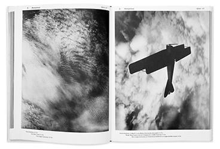
Wolkenstudies uit het boek The Movement of Clouds around Mount Fuji. Beeldmateriaal van de Japanse meteoroloog en fotograaf Masanao AbeVölter. Ge-edit door Helmut Völter en Marcel Beyer (2011). Gepubliceerd door Spector Books.
1. Gilles Deleuze (18 januari 1925 - 4 november 1995) was een Franse filosoof en een belangrijk figuur in het postmodernisme.
Deleuze, Gilles(1968),Difference and Repetition, Reille: Presse Universitaires de France
2. Völter, Helmut en Beyer, Marcel (2011), Wolkenstudien. Leipzig: Spector Books
3. Masanao Abe (1891–1966) was een Japanse meteoroloog en fotograaf. Verantwoordelijk voor het beeldmateriaal van Wolkenstudien.
Het Geluid
Gaston Bachelard 4beschrijft in zijn boek Air and Dreams (1988) 5de lucht als aspiratie, het uitmuntende en het verlangen. Naast de dynamische beelden die Bachelard beschrijft is de lucht ook een drager van geluid, iets wat niet zichtbaar is. Een karaktereigenschap van geluid is dat het zich kan uitzetten en kan verbuigen. Dit zelfde geldt voor de wolken, deze kunnen zichzelf ook uitzetten en verbuigen naar aanleiding van druk, temperatuur enzovoort. Wanneer geluiden worden verbogen ontstaat er een nieuwe melodie. Wanneer geluiden worden verbogen ontstaat er een nieuwe melodie. Wanneer geluid systematisch wordt toegepast noemen wij dit muziek, de lucht is dus onze drager van de muziek.
Aristotle beschrijft in de Anima, II.8 6 verschillende facetten die nodig zijn voor het ontstaan van geluid. ‘De lucht moet worden geslagen, een plotselinge harde klap, wanneer de zweep zijn slag heeft gemaakt moet de lucht zich verspreiden. Er moet minimaal een vorm van pathos zijn om de echo’s te laten doordringen.’ De herhaling van echo’s kan een muziekstuk vormen. De klanken in de lucht zijn altijd ondergeschikt aan verschillende krachten voordat deze zich openbaart.
4. Gaston Bachelard (24 juni 1884 – Parijs, 16 oktober 1962) was een Franse filosoof en schrijver. Hij hield zich bezig met poepie en wetenschapsfilosofie. Hij hield zich o.a. bezig met de relativiteit theorie.
5. Bachelard, Gaston (1988). Air and Dreams: An Essay on the Imagination of Movement. Dallas: Dallas Institute of Humanities and Culture.
6. In het essay Anima 11.8 beschrijft Aristotle de perceptie van geluiden en hoe wij deze tot ons nemen.
1.2 ) Lineair perspectief
Het perspectief
Wanneer je een vrije val maakt, passeer je de lucht terwijl je met een enorme snelheid de aarde nadert. Doordat je geen vaste grond onder je hebt verlies je elk besef van oriëntatie. In de kunst wordt ook met deze oriëntatie gespeeld.
Het lineair perspectief is een systeem wat wordt ingezet om perspectief te schilderen in de kunst. Het platte vlak, het doek of papier, moet diepte krijgen door het standpunt van de waarnemer aan te nemen. Parallellen lijnen vormen de diepte op het papier, door te verdwijnen bij het verdwijnpunt.
Het lineair perspectief is gebaseerd op uitsluitingen en verschillende ontkenningen. Zo wordt de kromming van de aarde altijd genegeerd en wordt de horizon opgevat als een abstract vlakke lijn waarbij de twee punten een horizontaal vlak verbeelden. 7 De horizon is haast een plat begrip geworden. Een lineair perspectief is gebaseerd op abstractie en komt niet over een met ons persoonlijke perceptie. Dit perspectief creëert de illusie van een natuurlijke blik op de buitenwereld. Het Latijnse woord perspectiva betekent letterlijk: te doorzien. Het lineaire perspectief creëert niet enkel de ruimte, maar ook de lineaire tijd. In feite zorgt de horizon ervoor dat wij ons bewegen in de ruimte en in de tijd. Wij kunnen locaties naderen, maar ook verlaten. Walter Benjamin heeft ooit gezegd dat de tijd net zo leeg kan zijn als de tijd. Het oog is haast getraind om op zoek te gaan naar een verdwijnpunt, namelijk de horizon. Dit verdwijnpunt zorgt ervoor dat wij fysiek een positie kunnen innemen. Het perspectief kan ook worden ingezet om de kijker op het verkeerde been te zetten. Wanneer je afwijkt van het lineair perspectief kun je bijvoorbeeld spelen met de grond onder je voeten, enzovoort.
7. Steered, Hito (2011), “In Free Fall: A Thought Experiment on Vertical Perspective”
8. Joseph Mallord William Turner, (14 mei 1775 – 19 december 1851) was een Engelse landschapsschilder die bekend stond om zijn romantische kunst. Hij staat bekend om zijn olieverf schilderijen, maar beheerst de aquarel ook. Hij wordt ook weleens ‘de schilder van het licht’ genoemd.
De Horizon
In de schilderkunst is de horizon uiteraard heel erg belangrijk. In de kleuterklas wordt al geleerd hoe een lijnperspectief werkt. Kinderen beginnen vaak met een tekening door een horizontale lijn trekken in het midden van de pagina om er vervolgens mensen en bomen op te zetten. Toch kwam er geleidelijk aan een verandering met betrekking tot het lineair perspectief.. Deze verandering begon in de negentiende eeuw binnen de schilderkunst. Het werk The Slave Ship (1840), van J. M. W. Turner 8 heeft aan deze verandering bijgedragen. Turner verbeeldt hier een zinkend schip op het moment dat deze onder dreigt te gaan. In dit schilderij is de horizontale lijn zo getransformeerd dat de toeschouwer zijn stabiele positie verliest. Er zijn verder geen herkenningspunten van een mogelijk verdwijnpunt. Sterker nog, de horizon is wazig geschilderd, waardoor de toeschouwer zich kan inleven in de tragiek van een zinkend schip. De horizon lijkt te drijven, en suggereert een neerwaartse beweging van het schip. Het voelt alsof de zee het schip met al zijn kracht naar onder trekt, wat een vorm van zwaartekracht weergeeft. In deze heeft het transformeren van de horizon geleidt tot het uitdrukken van een emotie op het doek. De laatste seconden voor het schip ten onder gaat zijn hierin bevroren.
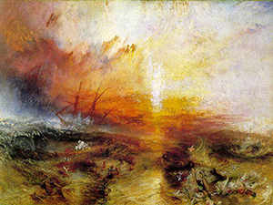
The Slave Ship (1840), Joseph Mallord William Turner
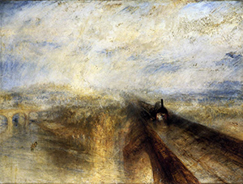
Rain, Steam, and Speed—The Great Western Railway (1844),Joseph Mallord William Turner
Het schilderij Rain, Steam, and Speed—The Great Western Railway (1844), ook van Turner is een ander goed voorbeeld waarbij het weglaten van een verdwijnpunt de tijd en ruimte van het schilderij beïnvloedt. Voor dit schilderij heeft Turner negen minuten lang zijn hoofd uit het raam van een trein gestoken. De toeschouwer krijgt bij dit schilderij het gevoel in de lucht te zweven. Dit komt omdat er geen duidelijk beeld is van het verleden en de toekomst. Door het ontbreken van een verdwijnpunt ontbreekt eigenlijk ook het eindstation van de rit. Mede hierdoor blijft de toeschouwer hangen in de lucht, waardoor je als toeschouwer zelf ook het gevoel krijgt dat je uit het raam hangt. Dit is een vorm van gewichtloosheid, omdat het een punt is waarbij er geen richting wordt aangegeven. Dit gevoel wordt versterkt door de afwezigheid van de grond.
Turner zijn studies zijn ook erg inspirerend als het gaat om het overbrengen van gewichtloosheid en het spelen met de horizon. In zijn studies schetst hij wolken die een emotie uitdrukken. In deze schetsen is er ook geen duidelijk verdwijnpunt. Ze brengen mij haast in een surrealistische roes, waarbij de tijd even stil staat. Het zijn allemaal schetsen van landschappen, waarbij er haast geen verschil is aangebracht in de grond en in de lucht. Beide zijn even dromerig en wazig geschilderd. Mede doordat de grond niet zo stabiel voelt zoals wij deze kennen ontstaat er het gevoel dat je zweeft.
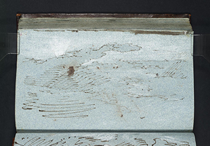
Studies, Joseph Mallord William Turner
1.3 ) Gewichtloosheid
Voor we verder gaan naar meer voorbeelden binnen de kunst is het belangrijk om even stil te staan bij wat gewichtloosheid nu precies inhoudt. Hoe komt het bijvoorbeeld dat wij deze vrije val maken, en niet kunnen blijven zweven. Op welke manieren bereik je wel dat punt van gewichtloosheid?
Gewichtloosheid is een toestand waarin een voorwerp geen gewicht ervaart, omdat dat voorwerp geen ophanging of ondersteuning heeft in die specifieke toestand. Dit is het geval tijdens een vrije val, dat wil zeggen wanneer op het voorwerp geen enkele kracht wordt uitgeoefend, behalve de zwaartekracht. 9
Wat is gewichtloosheid
Gewichtloosheid is een nieuwe omgeving waar wij, de mens, eigenlijk niet kunnen zijn. Gewichtloosheid is voor ons meer een fantasie wat een prettig gevoel opwekt. De echte gewichtloosheid en zijn vrijheid is gevaarlijk voor ons als mens, wij kunnen dit gebied niet met ons naakte lichaam betreden. Wij kunnen ons wel beschermen met onze technologie zoals een ruimteschip en een ruimtepak. Met een paraboolvlucht kan gewichtloosheid bereikt worden. Deze vluchten worden gemaakt met zogeheten zero-gravity planes, deze dragen de bijnaam Weightless Wonders. Deze vluchten zijn opgezet door de NASA Reduced Gravity Research Program. Degene die zo’n zero-gravity vlucht hebben meegemaakt gebruiken zelf de bijnaam “vomit comet”.
Bij een zogeheten zero-gravity paraboolvlucht volgt het vliegtuig een parabolisch pad, waarbij de versnelling van het vliegtuig gelijk is aan de zwaartekrachtversnelling (dezelfde grootte en richting). Dit geldt ook voor een kogelbaan zonder luchtweerstand, zogezegd een kogel in vrije val. De luchtweerstand wordt door de motoren van het vliegtuig gecompenseerd. Een persoon in het vliegtuig ondervindt dezelfde zwaartekrachtversnelling. Als gevolg daarvan staat de mens ten opzichte van het vliegtuig stil. Het zweeft, en de zwaartekracht wordt vergeten. In eerste instantie vliegt het vliegtuig 45° steil omhoog. Zodra het pad minder steil wordt, wordt de gewichtloosheid bereikt. Dit kan tot 30° worden volgehouden.
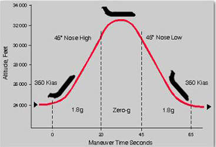
Grafiek wat aanduidt wat een parabool precies is.
In de afbeelding is goed te zien hoe gewichtloosheid wordt bereikt doormiddel van een paraboolvlucht. Een vergelijking die wij, gewone stervelingen, kunnen maken is het trampoline springen. Op het hoogtepunt ben je voor even gewichtloos, en is je snelheid 0, voordat je weer naar beneden gaat. Gewichtloosheid is altijd het hoogtepunt en omslagpunt van een curve. Op dat moment lijkt de tijd voor even stil te staan.
De Italiaanse geleerde Galileo Galilei10 ontdekte dat alle voorwerpen, zwaar of licht, groot of klein, even snel naar beneden vallen. Hiervoor dacht men dat zware dingen sneller zouden vallen dan lichte voorwerpen. Dat een veer langzamer valt dan een kogel heeft te maken met de weerstand die de lucht aan de voorwerpen biedt. In het luchtledige vallen ze wel even snel.
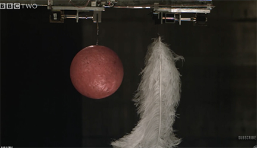
Human Universe: Episode 4, illustreert de zwaartekracht.
Human Universe: Episode 4, illustreert de zwaartekracht.
Een goed voorbeeld van gewichtloosheid is een baksteen op een weegschaal. De baksteen drukt kracht uit op de weegschaal en de weegschaal wijst hierdoor een ander gewicht aan. Als deze samen zouden vallen, vallen ze precies even snel. Hierdoor kan de baksteen geen druk meer uitoefenen op de weegschaal.Als de baksteen dit wel zou kunnen doen, dan zou de weegschaal een zetje krijgen en zo een voorsprong nemen op de baksteen. De druk zou dan ook gelijk weer weg gaan. De weegschaal wijst dan nul gram aan. De baksteen zou dan voor even gewichtloos zijn. Als wij mee zouden kunnen vallen, zouden wij de baksteen zien zweven. Wij zouden ons dan ook voor even gewichtloos voelen. Alles wat valt is gewichtloos, dus ook de vallende waarnemer.
9. Gaston Bachelard (24 juni 1884 – Parijs, 16 oktober 1962) was een Franse filosoof en schrijver. Hij hield zich bezig met poepie en wetenschapsfilosofie. Hij hield zich o.a. bezig met de relativiteit theorie.
10. Galileo Galileï was een Italiaans natuurkundige en sterrenkundige. (1564 tot 1642)
De Tijd
Indien een slinger van hier naar daar beweegt
verhoudt hij zich met zijn omgeving
die stil staat,
maar ook met zichzelf
die voortdurend beweegt.
Deze dubbelverhouding slaagt,
aangezien met het wegsnellen van de slinger naar daar tijd heengaat.
- Dick Raaijmakers11 - De slinger en zijn plaats, De Methode
Ik werd onmiddellijk gegrepen door dit gedicht van Dick Raaijmakers, hierboven staat enkel een gedeelte. Iets wat niet grijpbaar is toch zo te verwoorden inspireert mij om een poging te wagen om tijd en plaats in relatie met gewichtloosheid te beschrijven. Een vrije val kan enkele seconden duren, wanneer je van enorme hoogte springt een aantal seconden langer. Ik kan een vrije val enkel beschrijven van een herinnering naar vroeger, waarbij ik van een duikplank ben gesprongen. Er is iets wat bij deze ervaring haast niet te duiden valt. Wanneer je zo’n sprong maakt val je meestal kaarsrecht naar beneden. Dit is zonder parachute eigenlijk altijd het geval, want anders zou je een behoorlijke smakkerd maken. Voor en tijdens het springen neem je dus een houding aan zo recht als een perfect getrokken lijn van boven naar beneden. Dit is een gecontroleerde val en niet helemaal vergelijkbaar met het effect van een val van enorme hoogte, maar ondanks dat wordt je je met zo’n val al bewust van iets wat oneindig lijkt te kunnen duren maar toch zo klaar is. Wanneer je van de duikplank af wilt springen kijk je eerst het diepe in, maar wanneer je daadwerkelijk springt kijk je meestal niet naar beneden. Ik kan hier enkel voor mijzelf spreken en ik heb hier geen wetenschappelijke verklaring voor, maar ik vind het zelf een mooie gedachte dat wij het moment van vallen proberen te rekken. Wanneer je het eindpunt niet ziet komt deze onverwachts, dit geeft ook een grotere kick. Het mooie van het moment is dat de wereld daadwerkelijk stil lijkt te staan. Geluid wordt zelfs gedempt en bewegingen van anderen lijken relatief stil te staan in vergelijking met de snelheid die jijzelf maakt. Het is toch bijzonder dat je op deze manier het gewicht niet enkel van jezelf afneemt maar ook van de ruimte om je heen?
Het blijft iets onnatuurlijks om het diepe in te springen, veel mensen hebben last van hoogtevrees en de rest kijkt maar een keer over de rand voor hij de sprong waagt. Ik kan het mij niet voorstellen dat er mensen zijn die zonder te kijken de sprong nemen. Het zou wel echt de ultieme vrije val zijn, waarbij grenzen verlegt worden en waar je echt losraakt van de oriëntatie van je omgeving. Wij zijn er op ingesteld om te bewegen van a naar b, we hebben vaak een eind station in ons hoofd. Ik vind de duikplank een fascinerend object omdat je hier fysiek boven jezelf lijkt uit te stijgen. Wanneer je lijnrecht naar beneden springt, spring je toch altijd eerst omhoog. In feite vlieg je op dat moment een milliseconde en ben je op dat punt gewichtloos. Doordat je omhoog springt maar naar beneden valt raak je al gauw je oriëntatie kwijt. Het duurt zo ontzettend kort dat je het plezierige gevoel van vallen enkel ervaart als je tenen bijna in het water komen. Je wilt de val eigenlijk zo lang mogelijk rekken en daarmee de tijd, maar je wordt tegengehouden door de grond. Ik denk dat het niet uitmaakt hoe diep het zwembad is, al was deze tien meter diep dan zouden wij alsnog tot de bodem raken. In feite zou de val oneindig kunnen zijn. Het water vertoont geen verzet wanneer je er in komt. Evenals de lucht, het zou wat zijn dat wanneer je uit een vliegtuig springt en je halverwege blijft zweven in de lucht. Wanneer je de bodem raakt zetten je voeten zich automatisch af om een vlucht naar boven te maken. Ik vind dit zelf altijd een gaaf moment, omdat je met deze ene aanraking ineens meters omhoog kunt raken zonder te bewegen. Op dat punt voel je je gewichtloos en dat stopt wanneer je je hoofd weer boven water steekt. Het water heeft op dit gebied veel overeenkomsten met de lucht. In het water ben je in staat tot acrobatiek terwijl je op de grond nog geen handstand kunt maken. Het punt waarop je je afzet vorm je weer een lijn, meestal diagonaal naar boven. Hiermee kom je dichterbij de beweging van de vogel.
De lijn is het stilstaande
niet zelf bewegende beeld
van alle door het lichaam gepasseerde plaatsen.
De lijn bewaart de plaatsen.
Zij is een opsomming daarvan.
- Dick Raaijmakers 12 - Plaats, De Methode
Yves Klein heeft ook een poging gedaan om de zwaartekracht te slim af te zijn. Hij liet zich vanaf de dakgoot zo naar beneden vallen. Het was 'een sprong in het ijle' - le saut dans le vide. Deze poging spreekt heel erg tot de verbeelding, omdat wij ons kunnen identificeren met Yves Klein. Klein zag deze leegte als een nieuwe realiteit. Met deze sprong verloste hij zichzelf van het gewicht wat hij normaal gesproken meedraagt. Dit beeld vind ik om twee redenen sterk. Het eerste is dat wij allemaal weten hoe dit af zal lopen. Het tweede is dat de foto een stilstaand moment is van een vliegende beweging. Waardoor het vliegen toch in een klik is vastgelegd. Deze foto is uiteindelijk ontstaan door twee verschillende foto’s te schieten. Op de eerste foto sprong Klein daadwerkelijk van de muur maar landde hij op zachte kussens. De tweede foto was enkel van de omgeving.
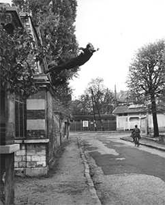
Fig.10 Saut dans le Vide (1960), Yves Klein
11. Raaijmakers, Dick (1985), De Methode . Eindhoven: Onomatopee(herdruk).
12. Dick Raaijmakers (1 september 1930 – 4 september 2013), was een Nederlands componist, theatermaker en theoreticus. De Methode (1985) is een boek vol prozagedichten over waarnemen en beweging..
13. Ornithologie (2016), samengesteld door Anne Geene en Arjan de Nooy, is een boek dat het gedrag van vogels in beelden uitdrukt. Het is meer dan een vogelgids, maar het gaat veel meer over hun choreografieën. .
Ik heb zelf nog nooit een vogel in een perfecte lijn naar beneden zien duiken, maar dat kan nog komen. De reden waarvoor zij diagonaal duiken is omdat zij wel controle kunnen uitoefenen op de druk die de lucht brengt. Gewichtloosheid is een moment waarop de grafiek een rechte horizontale lijn vertoont, als een bevriezing. Ik vind het interessant dat in de schilderkunst, maar ook met fotografie, gewichtloosheid wordt vastgelegd met een stilstaand beeld. Tijdens mijn onderzoek kwam ik bij het boek Ornithologie 13, samengesteld door Anne Geene en Arjan de Nooy. Dit boek is een verslag van het gedrag en de patronen van vogels in de lucht. Er wordt nadrukt gelegd op bijvoorbeeld de choreografie die de vogel in de lucht maakt.
Fig.11 Opstijgende vogels. Ornithologie (2016), samengesteld door Anne Geene en Arjan de Nooy.
In het boek wordt ook gespeeld met verticaal perspectief, door foto’s te kantelen. Hieronder staat een van mijn favoriete beelden uit het boek. Deze is ook gekanteld weergegeven en de choreografie in deze is echt prachtig. Groepen vogels die vallen en stijgen, zonder enige moeite. Het magische van een vogel is het onvoorspelbare. Wanneer een mens valt is deze niet te stoppen, wanneer een vogel een vrije val maakt kan deze elk moment weer de hoogte in gaan. Dat geeft deze foto voor mij zo mooi weer. Je voelt dat de vogel zich zo licht voortbeweegt door de zachte lijnen. Het lijnenspel die de vogels vormen zijn ongecontroleerd, maar toch in balans. In het lijnenspel zijn zachte bochten zichtbaar op de punten waarop meerdere vogels tegelijkertijd naar beneden of omhoog duiken. Dit gaat net zo soepel als wanneer wij met een surfplank een golf pakken, het gaat vanzelf. De vogel hoeft enkel zijn vogels te strekken om voort te blijven zweven.
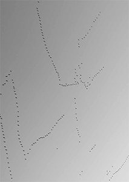
Fig.11 Opstijgende vogels. Ornithologie (2016), samengesteld door Anne Geene en Arjan de Nooy.
1.5 Vliegen als een Vogel
De mens heeft het vliegtuig, maar dit streelt niet het verlangen om zo vrij te zijn als een vogel. Wij blijven hierin afhankelijk van een ander transportmiddel. Het ontwerp van een vliegtuig is uiteraard gebaseerd op een vogel, maar wij hoeven enkel alleen plaats te nemen voor deze de lucht in gaat. Wat zou er gebeuren als wij daadwerkelijk als een vogel zouden kunnen vliegen? Wanneer je enkel je armen hoeft te spreiden? Dit is een droom die de mensheid al eeuwen lang bezig houdt. In 2012 was er een groep mensen die werkelijk geloofde dat dit eindelijk eens gelukt was. Namelijk door ene Jarno Smeets.
Human Bird Wings
Onder zijn alter ego, Jarno Smeets, hield Floris Kaayk14 een weblog bij over zijn proces van het maken van vleugels. Deze vleugels zouden de mens kunnen laten vliegen als een vogel. Dit project trekt een lijn tussen poëzie en wetenschap, achteraf gezien heeft dit de geloofwaardigheid versterkt. Kaayk startte in 2011 zijn weblog Humanbirdwings.net, waar hij zijn droom om te vliegen deelde met een groot publiek. “Mijn doel? Om mijn eigen vleugels te bouwen en er mee te vliegen. Iets waar Leonardo DaVinci, mijn grootvader en ik zelf al een lange tijd van dromen” schrijft hij op zijn blog. Hij neemt de lezer mee in het proces van het ontwikkelen van bruikbare vleugels voor de mens. Interessant aan zijn blog is het onderzoek naar verschillende materialen en technieken. De titel van zijn blog vind ik interessant, omdat wij als mens altijd refereren naar de vleugels van vogels als het gaat om vliegen. Wij gebruiken ook niet voor niets het gezegde ‘vogelvrij’. Onze pogingen om te vliegen berusten ook allemaal op het idee van vleugels. Kaayk ziet zichzelf in dit project als de romp van de vogel, en bouwt zijn externe vleugels die hem in de lucht moeten kunnen dragen. In dit opzicht berust Kaayk zijn plan meer op waarheden en wetenschap, in plaats van enkel een gewichtloos gevoel over te brengen. Waar Bas Jan Ader wordt overmeesterd door de zwaartekracht en hier een narratief aan linkt, heeft Kaayk de werkelijke bedoeling om de zwaartekracht te overmeesteren. Ondanks dat het plan staat als een huis, zaait Kaayk wel twijfel over zijn eigen schetsen. Wanneer hij spreekt over fragiel, maar sterk materiaal, maakt hij een verwijzing waarin haast een vanzelfsprekendheid naar voren komt.
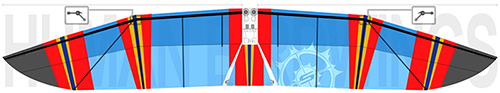
Fig.13 Jarno Smeets zijn vleugel schetsen.
“This fabric weighs about 70 grams per square meter, so in total that will be around 1050 grams. It’s quite a challenge to work with this fabric. It’s strong, but at the same time very fragile. Especially because of the forces it has to cope with during the flights, it’s important to sew the seams carefully, and give the wingshape extra strength without making it too heavy. The top part of the kite will be folded around the ribs to create an aerodynamic shape. For extra lift and control I’ll stretch a piece of kitefabric between the legs, as some sort of tailwing.”
Kaayk schept hier niet enkel een verhaal met vorm en materiaal, maar zeker ook met taal. Het gebruik en benoemen van specifieke materialen misleidt de lezer in een illusie.
Deze vleugels zijn uiteraard geïnspireerd op historische schetsen van vliegmachines. Kaayk refereert, natuurlijk, aan Leonardo Da Vinci zijn vliegmachines. In Da Vinci zijn schetsen is te zien dat het theoretisch zou kunnen werken, enkel is het gewicht steeds te zwaar. Da Vinci had een grote fascinatie voor vogels, de bouw van hun vleugels en de bedoeling van veren. Voor zijn eigen schetsen liet hij zich ook inspireren door het verhaal van Icarus, namelijk externe vleugels die aan de mens kunnen worden bevestigt. Door het op en neer gaan van de vleugels zouden de vleugels in staat moeten zijn om ons van de grond de lucht in te tillen. Da Vinci wist dat het buiten het bereik van de mens was om met gewone vleugels te vliegen, de vogel is namelijk in staat om te vliegen met de helft van hun spieren, maar de mens uiteraard niet. Om deze reden ontwierp hij vleugels met speciale kleppen die geopend zouden worden bij het opstijgen en zouden sluiten bij het landen. Wetenschappers hebben later zijn schetsen ontdekt en zijn deze gaan bestuderen. De kleppen die Da Vinci had bevestigd aan de vleugels gebruiken wij nu ook bij vliegtuigen.
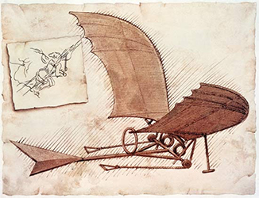
Fig.15 Vliegmachine, Leonardo Da Vinci
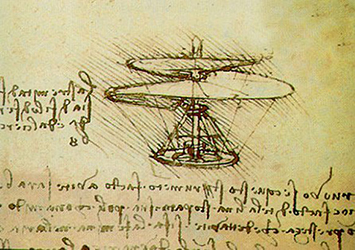
Fig.15 Vliegmachine, Leonardo Da Vinci
Er wordt nog altijd gebouwd op deze studies van Da Vinci. De vergelijking is ook goed te maken met Kaayk zijn ontwerp. Hij heeft ook externe vleugels ontworpen en bootst de beweging na van vogels. Hij lanceert de werking van zijn ontworpen vleugels doormiddel van een zelfgemaakte video. In deze video zie je Kaayk daadwerkelijk de lucht in gaan, mede dankzij de vliegende beweging die hij maakt met beide armen. Het kite materiaal lijkt goed gekozen en draagt hem meters de lucht in. Deze geslaagde poging wordt euforisch gevierd met zijn vrienden. Jarno Smeets was op dat moment de eerste mens ter wereld die heeft gevlogen als een vogel. Deze video ging uiteraard onmiddellijk viral. Er was een groep mensen die het gebeuren in twijfel trokken, maar er was ook een grote groep mensen die dit verhaal volledig geloofde. Na een aantal dagen kwam dan toch de aap uit de mouw, het was een hoax. Waarom zijn hier zoveel mensen ingetrapt? En over welke elementen beschikt deze video dat wij het voor waar aan nemen?
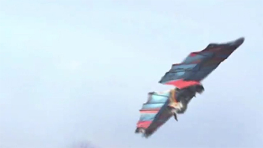
Fig.16 Human bird wings, Jarno Smeets
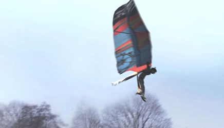
Fig.16 Human bird wings, Jarno Smeets
De weblog is een prachtige manier van het opbouwen van dit verhaal. Doordat het proces eerder is gepubliceerd wekt dit vertrouwen op, Jarno Smeets is hier immers al tijden mee bezig. Waarom zou het eigenlijk niet kunnen? Zoals eerder beschreven postte Smeets veel referenties aan materialen, en zo ook de materialen die niet geschikt bleken te zijn. Na falen is slagen de juiste volgende stap. Het enthousiasme in het verhaal keert ook terug in het begin van de video. Hier lijkt Smeets een tikkeltje zenuwachtig, maar vooral ook opgewonden. Deze mix van emoties laten jou als kijker helemaal meeleven in het verhaal. De video wekt ook het gevoel op van amateur film, zo zijn bijvoorbeeld geluiden van de wind niet weggewerkt. Dit is een essentieel element van het slagen van deze hoog. Tijdens het trotseren van de zwaartekracht krijg je tegenstand van de lucht. In de video is duidelijk te horen hoe Smeets kracht moet zetten tegen de lucht/wind. De video weerspiegelt onze droom om te vliegen erg sterk, wij willen kunnen opstijgen als een vogel. Dit is letterlijk wat Smeets doet in deze video, hij gebruikt dezelfde choreografie als een vogel ook zou doen. De choreografie waarvan wij weten dat deze werkt.
In zijn video gebruikt hij ook beelden die geschoten zijn vanuit het vogelperspectief. Hoogte verschillen geven de kijker het gevoel zelf te vliegen. Er wordt afgewisseld in hoogtes, waardoor het geen vlak vogelperspectief weergeeft. Wanneer er enkel vanaf een hoogte een lineair stuk gefilmd zou zijn, zou het eerder het gevoel van montage opwekken. De druk van de lucht oefent druk uit aan de onderkant van de vleugels. Op deze trillingen lijkt Smeets te zweven. Dit vind ik het mooiste stuk van de video, omdat hierin gewichtloosheid het meest bereikt wordt.
14. Floris Kaayk (1982) is een Nederlands film regisseur en animator. Hij houdt zich vooral bezig met kunst gerelateerde projecten.
15. Leonardo da Vinci (Vinci, 15 april 1452 - Amboise, 2 mei 1519) was een architect, uitvinder, ingenieur, filosoof, natuurkundige, scheikundige, anatomist, beeldhouwer, schrijver, schilder en componist uit de Florentijnse Republiek
Vallen als een vorm van poëzie.
Bas Jan Ader16 is voor mij een enorme inspiratie binnen dit onderzoek. Ik maakte een paar jaar geleden kennis met zijn werk en het werk heeft mij nooit meer losgelaten. Ik was toen al enorm geïnteresseerd in het thema gewichtloosheid en methodes om de zwaartekracht te overmeesteren. Bas Jan Ader heeft een vorm gevonden om een mislukking uit te beelden. Als een symbool van het mislukken gebruikt hij de val. Zijn werk Fall 1 zit hij op de nok van zijn dak in Los Angeles, om daarna van het dak af te rollen in de struiken te belanden. In de daarop volgende Fall 2 valt hij weer met zijn fiets in de gracht. In Broken Fall hangt hij weer aan een tak in de boom, het is zo goed. Wat ik zo goed vind aan zijn werk is het feit dat hij het zo simpel mogelijk in beeld brengt. Hij gebruikt de val als een symbool voor het mislukken en al wat hij doet is vallen, zonder poes pas er omheen. Hij heeft zelf nooit de intentie gehad om te vliegen. Hij beeldt uit dat de zwaartekracht ons altijd zal overmeesteren. ‘Wanneer ik van het dak val of in een gracht, gebeurt dat omdat ik in de zwaartekracht mijn meester heb gevonden’, aldus Bas Jan Ader. Hij laat veel aan de verbeeldingskracht over van het publiek, door dit gegeven wordt zijn werk ook enorm poëtisch, hij voelt niet de behoefte om zijn gedachte uit te leggen in het werk zelf. Het feit dat het een serie is vind ik ook enorm sterk en inspirerend, het gaat niet na een, twee keer goed. Soms moet je nou eenmaal vaak vallen voordat je eindelijk weer kunt opstaan. In zijn werk maakt hij enkel gebruik van zichzelf/zijn lichaam en de omgeving.
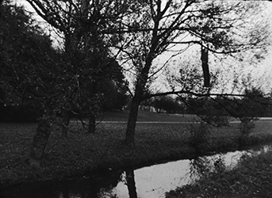
Fig.18 Bas Jan Ader, Broken fall (organic), Amsterdamse Bos, Holland, 1971.
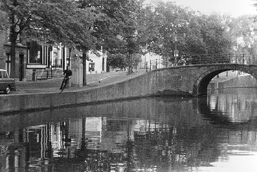
Fig.17 Bas Jan Ader Fall 2 (Amsterdam) 1970
16. Bas Jan Ader (19 april 1942 - Atlantische Oceaan(?)) was een Nederlands conceptuele kunstenaar. In 1942 plotseling verdwenen van de aardbodem.
02) Het vliegende varken
De droom om gewichtloos te zijn is al zo oud als de mensheid. Iedereen wordt door dit fenomeen aangetrokken. Ik heb onderzoek gedaan naar de geschiedenis van gewichtloosheid in de kunstgeschiedenis. De Griekse en de Romeinse goden werden al gewichtloos afgebeeld. Deze goden vliegen doormiddel van dieren of door hun eigen krachten. Gewichtloosheid staat hierin gelijk aan iets machtigs en is ongrijpbaar voor de gewone sterveling. Het sublieme. In onze verbeelding is de eerste vliegende mens de dromer zelf. De lucht werd altijd al gezien als een vrijheid, een element wat ons gewicht wat wij meenemen op aarde verlicht. Het roept een vrolijk gevoel op, wij voelen ons licht en wij kunnen reizen zonder afhankelijk te zijn van een ander. Om deze rede valt gewichtloosheid onder het sublieme en de romantiek binnen de kunst.
2.1 Het Sublieme
Het sublieme duidt op het zoeken naar hoogte, het streven naar ofwel het reiken naar het allerhoogste. Het sublieme ‘tilt ons op. Want onze ziel verheft zich, onwillekeurig, door wat werkelijk subliem is. Ze neemt een hoge vlucht en wordt van vreugde vervuld, vreugde en trots, alsof ze wat ze hoorde zelf heeft gemaakt’
-G.J.E. Rutten
Hierin krijgt vliegen een metaforische lading die wij allemaal zouden kunnen ervaren. Het sublieme streelt onze verlangens. Wanneer jij het sublieme ervaart, worden prikkels van buitenaf als het ware geblokkeerd. Schoonheid gaat hand in hand met de dromen die wij willen nastreven. Schoonheid ervaren is altijd overweldigend en kan soms zelfs beangstigend zijn. Dit omdat wij hierin geconfronteerd worden met het aller machtigste.
Immanuel Kant linkt het sublieme ook met nietigheid, een gevoel van overmacht wat ons doet realiseren dat wij kleiner zijn dan datgene. Kant ziet dit terug in verschillende natuurkrachten die sterker zijn dan de mens. Denk hierbij aan tornado’s, vulkaanuitbarstingen en dergelijke. Naast het gevoel van overmacht speelt enthousiasme ook een rol in het ervaren van het sublieme. Bij kant raakt deze verbeelding als het ware voor een bevrijding en niet voor ontregelde waanzin. “Enthousiasme is een extreme modus van het verhevene.” aldus Jean-François Lyotard. Kant ziet het sublieme als vormloos, terwijl het schone juist deze vorm nodig heeft om schoon te zijn. Het is vormloos omdat het ons voorstellingsvermogen te boven gaat.
Waarom staat vliegen voor het sublieme?
Vliegen wordt gezien als een onnatuurlijke kracht, waarmee je van lokatie naar lokatie kunt gaan. Vroeger was dit ook een van de beweegredenen om een vliegmachine te bouwen. Naast dat wij ons zo vrij als vogels willen voelen, biedt vliegen ook de mogelijkheid om de wereld te verkennen en kennis uit te wisselen. Door de representatie van goden en hun macht, wil de gewone sterveling deze kracht kunnen evenaren. Tenslotte zijn wij allemaal een beetje gesteld op een bepaalde macht.
19. Rutten, G.J.E, Over het sublieme bij Longinus en Burke G.J.E. Rutten
2.2 Hoogmoed
De mythe van Icarus keert uiteraard ook terug in de schilderkunst. In het schilderij Daedalus en Icarus van Charles-Paul Landon, gemaakt in de negentiende eeuw, is het moment voor de vrije val afgebeeld. Deze mythe, en de schilderkunst zelf, bevestigen het beeld wat iedereen heeft van vliegen. Je hebt namelijk vleugels nodig, afgeleid van de vogels. Daedalus en Icarus springen vanaf een hoogtepunt in eerste instantie naar beneden. In dat opzicht is mijn verbeelding anders, ik zou los willen komen van de grond om vervolgens steeds hoger te kunnen vliegen. De houding van Icarus refereert ook weer naar een vogel. Naast de vleugels op zijn rug gebruikt hij zijn armen ook als vleugels, door deze in een positie te plaatsen waarmee de val kan worden ‘opgevangen.’
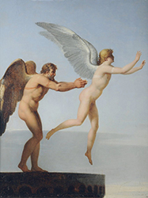
Fig.20 Daedalus en Icarus (1799), Charles-Paul Landon
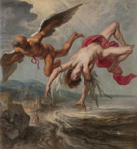
Fig.21 The Fall of Icarus (1636), Jacob Peter Gouwy
In een ander schilderij, The Fall of Icarus (1636) door Jacob Peter Gouwy, wordt de val van Icarus verbeeldt. Dit schilderij weergeeft de keerzijde van hoogmoed en laat de zwaartekracht zijn werk doen. De veren van de vleugels van Icarus dwarrelen mee naar beneden in zijn val. Al zullen deze in onze op onze wereld langer weerstand kunnen bieden aan de zwaartekracht en nog even gewichtloos in de lucht blijven hangen, terwijl Icarus zich al niet meer in de lucht bevindt. Deze mythe blijft interessant terugkeren op het doek, omdat in de mythe de vleugels worden ingezet als een tool. Ondanks dat de strekking van het verhaal gaat over hoogmoed, lijken deze vleugels bruikbaar voor een ieder. Hier wordt op een andere manier gerefereerd naar iets machtigs. Opvallend aan dit schilderij vind ik persoonlijk de diepte. Icarus bevindt zich namelijk nog niet eens zo heel hoog, dit beeld wordt geschept door het formaat van de mensen die zich bevinden op de groot, ze lijken nog vrij groot en dus nog best dichtbij. Je kunt dit ook interpreteren als een lijn tussen de bescheidenheid en hoogmoed, deze wordt al snel overschreden.
Deze mythe houdt nog steeds stand in deze moderne tijd. Vliegen staat hierin gelijk aan een goede flow en een hoogtepunt. Mensen raken ongeremd door het gevoel de hele wereld aan te kunnen. In zekere zin heeft Icarus zich even gewichtloos gevoelt, maar dit kan nooit lang duren. Dit gevoel herken ik heel erg wanneer ik aan het ontwerpen ben, en dat ook goed gaat. Op een zeker moment kun je ook weer een tegenslag verwachten, waardoor je even neerstort. Zou maken wij onbewust steeds een parabool in ons eigen proces. Wij maken een aanloop, bereiken een hoogtepunt waar wij ons voor even bevinden, voor wij weer met beide benen op de grond staan.
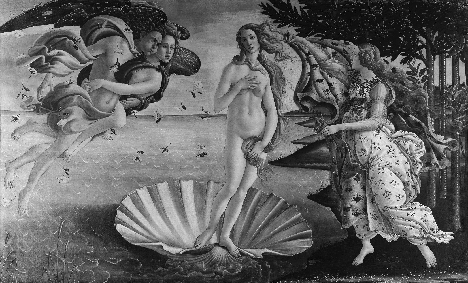
Fig.22 De Geboorte van Venus (1485), Sandro Botticelli
03) Vogelperspectief
Dagelijks bevinden wij ons in een stroming van chaos, drukte, haast en enorm veel prikkels. Wij leven allemaal op een kluitje, ondanks dat er veel ruimte is. Mensen zijn kuddedieren, en dat vinden wij helemaal niet erg. Ondanks dat vinden wij het niet prettig om te dicht op elkaars lip te zitten, wij hebben ruimte nodig om ons heen. Wij verlangen naar stiltes, maar wij zoeken niet snel de leegte op. In openbare ruimtes wil je misschien niet opvallen door op een plek te staan, waar jij als enige persoon dan het middelpunt bent. Toch zijn wij in drukke ruimtes ook opzoek naar ons eigen plekje. We houden al gauw een minimale afstand van een meter, en wanneer wij gedwongen zijn om op een kluitje te zijn hoop je dat de tijd snel voorbij vliegt. Wij vallen eigenlijk dagelijks in het zelfde patroon, omdat wij de ruimte om ons heen niet zien. Wij trekken naar elkaar toe, en van bovenaf lijken wij een zwerm vogels onderweg naar een nieuwe plek. Probeer deze zwerm eens weg te denken, naar welke plek zou je dan gaan? Probeer ook eens te focussen op deze zwermen, zijn dat geen prachtige composities? De ruimtes tussen deze zwermen zijn prachtige witruimtes, op een manier die wij nog niet kennen. Deze witruimtes blijven spannend, omdat ze elk moment kunnen verschuiven. Het lijkt haast een onderzoek naar de juiste compositie. Door het innemen van de positie van een vogel zie je de wereld onder je een stuk beter. Er gaan je dan ineens dingen opvallen waar je normaal niet bij stilstaat. Een van deze dingen zijn de enorme gaten in het landschap. Wij beschouwen de afwezigheid van mensen als een stilte/gat in de ruimte. Hierin ligt de kern waarom mensen zich zo aangetrokken voelen tot stiltes binnen de kunst.
3.1 Witruimtes op de aarde
Powers of Ten
Powers of Ten18 is een van de bekendste films van Eameses. Deze film is geïnspireerd op het boek Cosmic View: The Universe in Forty Jumps van Kees Boeke. Zij hebben dit boek gebruikt als de basis van hun film om de relatieve verhoudingen van dingen van microscopisch tot kosmisch niveau toont in machten van tien aan te tonen. De film begint met een picknick in het park, waar steeds verder op wordt uitgezoomd. Het speelt zich allemaal af binnen een vierkante uitsnede. Deze vierkante uitsnede staat in het begin van de film gelijk aan een vierkante meter. Deze zoomt vervolgens uit naar 10^2, 10^3, enzovoort. Fascinerend aan deze film vind ik het feit dat wij ons begeven in de drukte, terwijl er zoveel leegte om ons heen is. Zoals eerder beschreven kunnen deze ruimtes geïnterpreteerd worden als witruimtes. Het belangrijkste uitgangspunt van de film is schaal. Deze film komt uit 1977 en is sindsdien veelal gebruikt als inspiratie voor andere filmproducties met betrekking tot dit thema. Wat deze film zo goed laat zien is de oneindigheid van het niets. Dit kan eindeloos doorgaan, voordat er weer iets in zicht lijkt te zijn. Het zijn haast ingelaste pauzes binnen de werkelijke wereld. Wij voelen ons oppermachtig op aarde, maar eigenlijk zijn wij niets vergeleken met de rest van de ruimte. Deze film leert ons heel veel over schaal. Wij zijn klein ten opzichte van een bos bomen, maar zijn weer groter dan kleine dieren enzovoort.
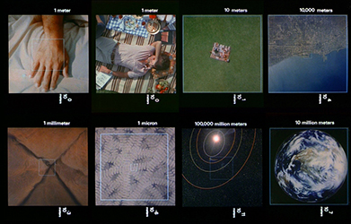
Fig.25 Powers of Ten (1977), geïnspireerd op het boek Cosmic View: The Universe in Forty Jumps van Kees Boeke.
18. Powers of Ten, Charles Eames (1977)
Katrin Korfmann
Beeldend kunstenaar Katrin Korfmann, tevens ook docente aan de academie, onderscheidt zich door beelden vanuit het vogelperspectief te schieten. Hiermee speelt zij ook in op hetgeen wat ik eerder heb onderzocht, namelijk het herkennen van gezichten. Om dit vogelperspectief in haar werk te onderzoeken heb ik haar werk Homo Ludens geanalyseerd. Ze benadrukt hier het vogelperspectief door dansende mensen een uitgerekte schaduw te geven. Deze schaduwen gaan haast een eigen leven leiden, doordat de poses met beweging een dans vormen. Ik vind het interessant dat we hierdoor eigenlijk het vooraanzicht nu eigenlijk zien van bovenaf. Korfmann schiet haar beelden vanaf een stijger of met een bestuurbaar mini helikoptertje. Haar werk is nooit geschoten op één moment, maar zij combineert meerdere shots (meestal tussen de 500 en 2000) in een beeld. Hierdoor lijken tijd en plaats in elkaar over te lopen. Op deze manier worden ook de bewegingen benadrukt, zo zie je de dans op verschillende plekken en tijden.
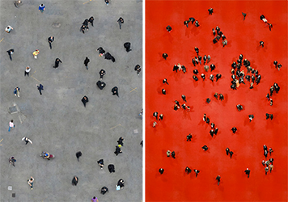
Fig.27 Links: Waiting for Atousa, Tehran, Katrin Korfmann
Fig.28 Rechts: Waiting for Julia, Katrin Korfmann
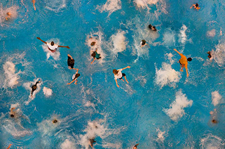
Fig.25 Powers of Ten (1977), geïnspireerd op het boek Cosmic View: The Universe in Forty Jumps van Kees Boeke.
3.2 De aantrekkingskracht van stiltes
Binnen de fotografie zijn er talrijke iconische foto’s gemaakt met mensen als het hoofdonderwerp. Wij kunnen ons goed inleven in andere mensen hun emoties. De meeste mensen zijn ontzettend empatisch. Fotografie is daarom een kunstvorm wat iedereen aanspreekt, mits er mensen op de foto staan. Dit kunnen ook journalistieke foto’s zijn. Om een heel bekend voorbeeld aan te halen van vorig jaar wil ik kort de effecten van de foto van de 3-jarige Aylan Kurdi uitlichten. Aylan Kurdi was samen met zijn familie uit Syrië gevlucht, maar heeft deze boottocht niet overleefd. Het iconische beeld van het jongetje wat op het strand van Bodrum ligt is gemaakt door Nilüfer Demir. Nadat deze foto gepubliceerd werd, begonnen mensen het vluchtelingen probleem anders te benaderen. Dit komt o.a. omdat iedereen zich kan voorstellen hoe ernstig het is om een kind te verliezen. Ik wilde deze foto kort benadrukken, omdat dit een beeld is waarvan mensen geëmotioneerd raken. Toch is het zo dat mensen zich aangetrokken voelen tot fotografie waarbij geen mens is afgebeeld. Bij fotografie waarbij ‘lege’ plekken zijn gefotografeerd wordt als het ware de echo van het bestaan van de mens bevroren. Eigenlijk zijn de sporen die mensen achterlaten de suggestie van een bewoond gebied. Er is een neurowetenschappelijk onderzoek gedaan naar dit fenomeen. Wanneer wij nieuw beeldmateriaal zien zoeken wij eerst naar gezichten van mensen. Dit is onderzocht door mensen hun ogen te volgen tijdens het bekijken van een serie foto’s. Duidelijk werd dat wij als eerst naar de gezichten kijken, mits deze op de foto staan. "In a sense, once people are in a shot, we can’t really ‘see’ the place for what it is," aldus Ann Sussman, architect en co-auteur van het boek Cognitive Architecture: Designing for How We Respond to the Built Environment. Dit is een eigenschap wat je niet hoeft te trainen, maar een die zo is ontstaan in de evolutie. Dit valt er dan ook niet uit te trainen, het weerspiegelt hoe wij als mensen zijn. Sussman heeft samen met de andere co-auteur Janice M. Ward een onderzoek gedaan om dit te testen. Tijdens het onderzoek lieten zij beelden zien van de Boston City Hall en de omgeving. Uit het onderzoek kwam naar voren dat mensen meer tijd besteden aan het bekijken van een minuscuul menselijk figuur op de foto, dan naar de architectuur. Architectuur fotografen worden dus enorm belemmerd door mensen in de foto, de mensen zijn als het ware hun handicap.
Ed Vessel is een neurowetenschapper die zich bezighoudt met neuoroesthathiek. Met zijn onderzoeken probeert hij te begrijpen hoe mensen esthetiek ervaren en wat hun perceptie daarop is. Vessel is van mening dat de afwezigheid van mensen in een beeld ruimte overlaat om jezelf in dat beeld te projecteren. Doordat mensen zichzelf in de ruimte kunnen inleven ontstaat er een bijzondere ervaring tijdens het bekijken van de foto. "Looking at a space where there are the telltale signs of human life but no humans, we do inevitably project experience into there, our memories, thoughts about what might be going on," zegt Vessel. "It happens almost as time-lapse in our head—a full day passing in a moment." Wij kunnen ons zelf haast de baas voelen over de ruimte die is afgebeeld, alsof het ons eigendom is geworden in een fractie van een seconde.
3.3 Het Niets
De lucht gaat gepaard met een leegte die ongekend en oneindig lijkt. Het is het absolute niets.
Deze leegte keert ook terug in het ontwerpen. Hierin worden leegtes toegepast om iets anders te benadrukken. Een belangrijke stroming is natuurlijk minimal art, waarbij er gespeeld wordt met kunst en stiltes. De term ‘minimal art’ is in 1965 bedacht door de Engelse filosoof Richard Wollheim. Hij kwam tot deze term, omdat de eigentijdse kunst zich berustte op afwezigheid van de normaal gesproken ‘inhoud’.
Stiltes kunnen zorgen voor een bepaalde tendens en spanning. Deze twee elementen keren terug in gewichtloosheid, denk hierbij aan de tendens van de lucht, maar ook juist aan het ontsnappen van de spanning. Kunstenaar Richard Serra heeft een fantastisch werk gemaakt, getiteld ‘Olmec’. Hij heeft dit werk geschilderd in 1989 op een groot canvas, wel 287 x 546 cm. In dit schilderij lijken twee gitzwarte vlakken op elkaar te stuiten. Er ontstaat een spanning tussen deze twee vlakken, doordat ze op elkaar lijken te leunen. Het linker vlak lijkt zich haast te berustten en ligt tegen het rechtervlak aan. Ze raken elkaar pas halverwege het vlak, waardoor je twee smalle open ruimtes krijgt. Het lijkt alsof zij beide druk moeten uitoefenen om overeind te blijven. De vlakken hebben elkaar nodig. Ik zie hierin heel erg de gewichtloosheid terug, omdat een andere kracht het over moet nemen. Het zware lijkt licht en andersom. De grootte van het schilderij is ook behoorlijk bepalend, omdat het zwart hierdoor nog groter lijkt dan het is. Het is overweldigend.
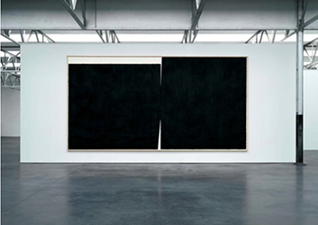
Fig.29 Olmec (1989), Richard Serra
3.4 Stiltes in muziek
Functioneren stiltes in muziek hetzelfde als stiltes in de kunst? Is dit een vorm van gewichtloosheid en zo ja: waarom?
Uiteraard kan ik tijdens mijn onderzoek naar stiltes niet om John Cage heen. Zijn compositie 4'33", geschreven in 1952, is een stuk muziek waarin de instrumenten die er zijn niet bespeelt worden. Cage heeft deze compositie opgedeeld in het 'normale' ritme van een muziekstuk. Na elk deel sloot hij de pianoklep om dit aan te duiden. Zijn bedoeling met dit stuk was om stilte te definiëren als een afwezigheid van geluid en het doorbreken van het bewustzijn. Cage duidt het stuk als een stuk wat een begin en een einde heeft, terwijl er tussen het begin en het einde in feite niets te horen is. Ik vind 4'33" spannend, omdat de dynamiek tussen het publiek en de componist in een keer naar een heel ander niveau wordt gebracht. Het publiek wordt door Cage in deze situatie gebracht en ondanks de stilte zal het publiek toch reageren. Er kan een bepaalde spanning ontstaan, omdat het een onverwachts stuk is. Het roept ook een bepaalde verwachting op, het wachten tot de stilte voorbij is. De compositie vind ik erg interessant met betrekking tot gewichtloosheid, omdat muziek over allerlei componenten beschikt om emoties uit te dragen. In de parabool zie je dat er een moment plaats vindt waarbij er een stilstaand moment wordt gerekt. Deze stiltes in muziek zijn essentieel om een hoogtepunt te bereiken. Deze stiltes kunnen enorm kort of lang zijn, maar dragen allemaal bij aan dat moment van zweven.
Deze stiltes zijn ook enorm belangrijk bij bijvoorbeeld dance, trance en hip-hop muziek. Het moment voor de ‘drop’ stijgt het publiek naar grote hoogte. Iedereen herkent deze spanning wel. Het is het moment voor het publiek helemaal los kan gaan. Het is exact het zelfde soort moment als wanneer jij op een trampoline springt, of wanneer je van een duikplank springt. Het duurt wellicht nog geen seconde, maar doordat deze stilte ongebruikelijk is lijkt dit langer te duren en de tijd te verdragen. In muziek zijn deze drops ook vaak niet langer dan een seconde of twee. Een goed voorbeeld is het nummer Bernadette van The Four Tops. De pauze duurt van 2:38 tot 2:395, en lijkt het einde te zijn van het lied. Daarna begint de muziek weer, wat als een verassing voelt en waardoor de extase waarin je je bevind wanneer je muziek luistert nog niet voorbij is. Ze spelen uiteindelijk nog 26,5 seconde verder voor het lied dan toch echt tot zijn einde komt.
Deconstructie zou een rol kunnen spelen om gewichtloosheid te ervaren. Er is een nieuw muziekgenre op komst waarbij gewichtloosheid centraal staat. Hierbij wordt de muziek als het ware gedeconstrueerd, zodat er enkel bepaalde elementen overblijven. Het weghalen van bijvoorbeeld de bass heeft al een enorme impact op het ervaren van een muziekstuk. Wanneer de bass wordt weggenomen mist het als het ware een drager. Hierdoor lijken de overige elementen te zweven in het stuk. Deze deconstructie kan ook worden toegepast in ontwerp.
3.5 Stiltes in ontwerp
Deze stiltes keren ook zeker terug in het ontwerpen. Een grote inspiratie voor mij, wanneer het gaat over witruimte en ritmes binnen het ontwerp, is voor mij de Typografische Monatsblätter. De Typografische Monatsblätter is een Zwitsers tijdschrift dat is ontstaan in 1932. Het was gericht op de professionele markt en dus niet zo zeer in de winkels te koop. Het tijdschrift besteedde veel aandacht aan het werk van grafische studenten. Met name het werk van de academie in Bazel werden aan het licht gesteld. Deze Zwitserse moderne stijl kenmerkt zich door asymmetrie, een vrije regelval, schreefloze letters en het gebruik van grids. Helvetica en de Univers zijn veel terugkerende lettertypes binnen deze stijl. Deze werken kenmerken zich door het gebruik van de leegte. Deze leegte creëert een ritme, waardoor het niet enkel een poster is die moet communiceren, maar een poster die iets poëtisch uitdraagt.
Ik heb een aantal werken geanalyseerd, om te onderzoeken hoe leegte zich verhoudt tot de typografie en de compositie.
Dit werk van Yves Zimmermann is een omslag gemaakt in 1960. Ik wil dit werk graag analyseren, omdat dit ontwerp gebruik maakt van de leegte door het vel haast in te delen in twee delen. Leegte is een manier om al het andere te benadrukken. Dit omslag maakt gebruik van ontzettend veel leegte, terwijl mijn oog gelijk getrokken werd naar de typografie. Ik denk dat dit komt doordat de leegte denkbeeldig de typografie tegen de rand aan lijkt te duwen. Het lijkt haast een onzichtbare kracht, evenals de luchtdruk. Dit gevoel wordt versterkt door de drie lijnen, die wel over de hele breedte uitstrekken. Vaak wanneer wij lijnen in deze opstelling zien, alsof het schrijflijnen zijn, verwachten wij ook dat er iets opgeschreven is. Dat is op de linkerhelft niet het geval, waardoor de lijnen je ogen automatisch ook leiden naar de aanwezigheid van de typografie. Hierin speelt de afwezigheid in eerste instantie ook een grote rol. Marges binnen het ontwerp spelen ook vaak een rol in deze balans, doormiddel van het inzetten van een lege 'rand;. Opvallend aan dit werk is dat de marges ontzettend klein zijn, waardoor er weinig lucht zit tussen de typografie en de rand. De typografie lijkt haast van het papier geduwd te worden. Deze marges spelen een enorme rol in de manier waarop wij dit werk interpreteren. De typografie is op zo'n manier gezet, zodat de nadruk meer op de letters ligt dan de woorden. Naar mijn mening is de context ondergeschikt aan de compositie. Als ontwerper is het doel om informatie te communiceren. In dit ontwerp lijkt dit minder belangrijk, de niche markt kan hier een rol in spelen.
Dit werk, ook onderdeel van de Monatsblätter, gemaakt door Emil Ruder is voor mij een prachtvoorbeeld van gewichtloosheid binnen het ontwerp. Voor de een zal dit misschien eerder beweging uitdrukken, doordat de typografie enkel in italic is geplaatst, wat een gevoel van snelheid kan overbrengen. Voor mij weergeeft dit juist het gevoel, zoals eerder beschreven, wanneer je voor even in de lucht blijft hangen voor de zwaartekracht zijn werk doet. Dit komt mede doordat de rechter kolom bijna het kader aanraakt, alsof het wordt wordt tegengehouden. Als deze kolom van het kader zou verdwijnen, zou ik het interpreteren als beweging, nu meer als een pauze.
3.6 Ontwerpen als een vogel
Gewichtloosheid bevat meerdere lagen evenals ontwerpen. Je hebt de inhoudelijke laag, maar ook de zichtbare laag. Gewichtloosheid kan op meerdere manieren geïnterpreteerd worden, evenals ontwerp. Vorm en inhoud moeten beide een vorm van gewichtloosheid dragen. In het hoofdstuk De Vrije Val wordt duidelijk hoe belangrijk het perspectief is binnen de kunst om een gevoel van gewichtloosheid te benaderen. De schilderkunst lijkt in dit opzicht heel anders dan ontwerp, maar er zijn juist heel veel overeenkomsten.
Als je praat over print dan is de print zelf vaak 2d. Meestal wordt er geprint op papier en wordt dit opgehangen aan de muur of verschijnt dit in een boek. Gewichtloosheid roept niet gelijk het gevoel op van een vel papier met typografie, maar zelfs op een vlak vel kan gewichtloosheid bereikt worden. De lucht is de drager van degene die gewichtloos is. Het papier krijgt hierin dezelfde rol als de lucht, namelijk de drager. De lucht zelf is het niets evenals het papier. Het heeft een functie op de achtergrond. Hetgeen wat op de voorgrond treedt moet gewichtloosheid uitdrukken door een relatie aan te gaan met het niets. Typografie is een element waar wij als ontwerpers veel gebruik van maken. Lettertypes hebben een karakter welke juist moet worden ingezet. Een zwaar lettertype zou moeilijker kunnen worden ingezet om gewichtloosheid uit te drukken. Een lichter lettertype zou veel geschikter zijn, Een licht lettertype zou geschikt zijn om daadwerkelijk te zweven. Een zwaar lettertype zou wel kunnen worden ingezet om het vogelperspectief uit te drukken. Wanneer je zweeft wordt je gedragen door een kracht. Deze kracht/druk kan worden ingezet om de typografie te zetten. Denk hierbij aan italics, maar ook tegengestelde italics waarbij de typografie naar achter gaat leunen. Bij tegengestelde italics lijkt de typografie te worden weggedrukt door een onzichtbare kracht. Bij de normale italics wordt de beweging versoepelt, wat ook een belangrijk onderdeel is binnen het thema. Niet enkel het uitkiezen van een lettertype is belangrijk, maar ook het zetten van de tekst zelf. Wanneer typografie heel nauw gespatieerd is geeft dit niet het gevoel van vrijheid. De positionering van de typografie is ook heel belangrijk. Bij het maken van bijvoorbeeld een poster zijn er vaak verschillende hiërarchieën in teksten. Denk hierbij aan een titel, subtitel, beschrijving etc.. Wanneer je een poster van boven af bekijkt, komen deze hiërarchieën naar voren in de vorm van verschillende hoogtes. Net als in de Powers of Ten kan er op deze manier worden gespeeld met diepte en schaal. Een beschrijving is ‘minder prominent en belangrijk’ dan bijvoorbeeld de titel. Deze wordt dan ook kleiner afgebeeld ten opzichte van de titel. Als je de poster bekijkt vanuit het vogelperspectief zou de beschrijving lager liggen dan de hoogte van de titel. In ontwerpen keert het verticaal perspectief natuurlijk veel terug. Posters zijn meestal verticaal, wij lezen van boven naar beneden en rangschikken informatie ook op deze manier. De compositie van de typografie speelt een heel belangrijke rol in het creëren van een sfeer. Wanneer je een zwerm vliegende vogels bestudeert zie je lege ruimtes ontstaan tussen de vogels. Wat als je deze vogels vervangt door letters? Wat je dan ziet is dat de ruimte tussen letters enorm kan variëren. Van dicht op elkaar tot ver verspreidt. In statisch ontwerp zou dit kunnen worden ingezet in verschillende vormen, een boek, een poster, signaturen. Hierin speelt de witruimte een belangrijke rol. Leegtes leggen de nadruk op de choreografie van de letters. De hoogtes van de letters mogen verschillen en hoeven geen patroon te vormen. Wanneer er een patroon wordt gevormd zou dit kunnen werken, maar het zweven is overtuigender wanneer deze ongecontroleerd is. Hierin ligt gelijk een moeilijkheidsgraad voor de ontwerper die is getraind om balans te creëren in zijn werk. Hele kleine details maken altijd een groot verschil binnen ontwerp. Zo zou de interlinie19 tussen de tekst vallen kunnen verbeelden op een klein niveau. Wanneer de interlinie groot is lijken de zinnen bijvoorbeeld al te zweven op zichzelf. Dit kan natuurlijk worden uitvergroot op grote schaal. Wanneer je gewichtloosheid moet verbeelden binnen een kader kun je het kader ook gebruiken als de kracht die typografie bijvoorbeeld omhoog houdt. Wanneer je bijvoorbeeld de typografie vlak naast een kader plaatst krijg je het gevoel dat de tekst op een manier tegen de rand van het papier drukt. Dit komt door het grote contrast tussen veel wit aan de linkerkant en weinig wit aan de rechterkant. In ontwerp wordt leegte/wit gebruikt om dingen te benadrukken. Het creëert ritmes, maar vooral een ervaring. Zelfs in boekvorm kun je gewichtloosheid creëren doormiddel van het inzetten van deze lagen. Een simpel voorbeeld van vliegen is wanneer je door een tijdschrift bladert. Een tijdschrift verschilt hierin ten opzichte van een boek. Een tijdschrift is zo opgebouwd dat je er op verschillende snelheden doorheen kunt. Zo is er veel beeld te zien, wat het tempo van het bladeren versnelt. Wij nemen sneller beelden in ons op dan tekst. Je kunt door een tijdschrift heen zweven, omdat je niet perse van voor naar achter hoeft te lezen. Er zijn hierin geen restricties, even als vliegen. Wanneer je een boek zou ontwerpen met het thema gewichtloosheid zou je bijvoorbeeld de parabool kunnen inzetten. Hierin is de opbouw erg belangrijk. Wanneer je een boek op deze manier ontwerpt, zou op het middelpunt gewichtloosheid worden bereikt. Je zou dit op verschillende manieren kunnen doen, je kunt bijvoorbeeld refereren naar de curves die in muziek gebruikt worden. Op de ene pagina staat bijvoorbeeld veel tekst en op de pagina die volgt ontstaat een enorme leegte. Misschien wel voor meerdere spreads achter elkaar. Door het bladeren ontstaat er een spanningsboog die speelt met de tijd. Iedere pagina die je omslaat maakt een sprong in de tijdlijn. In een boek kun je in feite terugbladeren in de tijd. Papier heeft ook zeker een bepalende functie, hierin kunnen mooie combinaties van zwaarte en lichtgewicht worden gemaakt. Het zou zelfs spannend zijn om dit om te draaien en de opbouw zo licht mogelijk te maken. Het opstijgen moet gaan met een enorme snelheid, snel bladeren, met licht papier wordt dit eerder bereikt dan met zwaar papier. Hierin kan worden gespeeld met de verwachtingen van de lezer. Plaats en lokatie veranderen in milliseconden, waarbij transparant papier zou kunnen worden ingezet om de verschillende locaties in beeld te brengen.
Het vogelperspectief gaat meerdere relaties aan met ontwerp. Ontwerp in de vorm van drukwerk is vrijwel altijd plat, je kijkt er op zonder te zien wat daarachter zit. Wat mij nog interessanter lijkt is een scenario waarbij wij als ontwerpers daadwerkelijk vanuit de hoogte zouden kunnen ontwerpen. Wat voor verschil zou dit maken?
Wij beschikken al over een aantal facetten van het vogelperspectief binnen ontwerp. Het eerste is iets bekijken van een afstand. Dit mag soms frequenter voorbij komen tijdens het proces, dat wel. Wanneer je bezig bent met je passie is het soms moeilijk om deze weer voor een moment los te laten. Je bent gefocust en beweegt je in de juiste richting. Wanneer je een oplossing gevonden hebt, ben je je niet meer bewust van andere paden. Je vergeet alles om je heen en wanneer je een print maakt zie je ineens dingen die niet lijken te kloppen. Het helpt echt om een letterlijke afstand te nemen tot je werk en deze van ver af te bekijken. Je hangt het op de muur, neemt wat meters afstand en beoordeelt of het werk nog steeds uitdrukt wat het zou moeten. Een ander bekend trucje is het pakken van je telefoon en je werk te beoordelen door de camera van je telefoon. Er zit nu een laag tussen jou en je print, waardoor je objectiever ernaar kunt kijken. Wanneer je van bovenuit de lucht zou kunnen vormgeven zou je alles op schaal zien. Iets enorm groots lijkt van boven enorm klein. Op deze manier kun je een betere balans creëren tussen de verschillende elementen. Tekst zou enkel gelezen worden als zwarte vormen en ook hierin creëert dat een betere balans tussen dichtheid en open gebieden. Ontwerpen vanuit de hoogte zou een enorme kans geven aan ontwerpers om zo bijvoorbeeld dichtheid weg te nemen uit hun werk. Wij zijn soms bang voor wit, maar wij hebben het wit nodig om dingen te benadrukken. Wanneer je in de lucht zou zweven zou je deze ruimtes veel beter kunnen interpreteren. Je ziet dat er veel meer ruimte is dan je denkt en je ziet vooral dat veel elementen bij elkaar proppen niet de oplossing is om iets te communiceren.
Een ander mooie eigenschap van een vogel die wij zouden moeten overnemen is het in en uitzoomen. Een vogel doet dit moeiteloos door zich naar beneden en omhoog te bewegen, wij vergeten deze stap vaak te ondernemen. Ons kost het ook niet veel moeite, maar wij zien het beeld graag het liefst in zijn geheel. Het liefst ook zo groot mogelijk. Het venster in inDesign staat dan helemaal ingebouwd tussen de andere vensters van de software, waardoor de interface al heel onrustig is. Inzoomen is heel belangrijk om details te kunnen beoordelen zonder deze over het hoofd te zien. Denk hierbij aan de spatiëring van zinnen. Wanneer je een zin spatieert terwijl je volledig ingezoomd bent kun je de zin goed beoordelen. Alleen je ziet dan nooit wat deze zin doet ten opzichte van de rest. Als deze te dicht op elkaar gespatieerd zit zie je dat gelijk wanneer je weer uitzoomt. Balans is weer veel beter te beoordelen door voldoende uit te zoomen zodat jouw ontwerp een miniatuur wordt. Als wij continue op deze manier zouden gaan vormgeven, het omhoog en naar beneden gaan, denk ik echt dat dit ons veel te bieden heeft. Wij beoordelen tenslotte al een ritme, van bijvoorbeeld een boek, door deze in miniaturen uit te printen. Dit doen wij om precies dezelfde reden als ik hierboven heb geschreven. Wanneer er enkel vlakken en lijnen overblijven is het makkelijker om in te zien waar vlakken moeten verdwijnen.
Tegenwoordig werkt een grafisch ontwerper met verschillende media en is niet alles meer statisch. Wanneer je bijvoorbeeld met een beeldscherm werkt, computer of televisie, dan kun je ook spelen met de ruimte. Een beeldscherm kan niet worden afgesneden, zoals papier, maar kan meedraaien met jouw vormgeving. Dat is de kracht van een beeldscherm, zeker nu met virtual reality. Een heel simpel voorbeeld is het scrollen door een website. Dit is een vorm van vliegen. Tegenwoordig wordt er veel gebruik gemaakt van het eindeloos scrollen, dit kan prachtig werken wanneer je door het luchtledige scrolt. Iets wat in printwerk soms mist is het letterlijk op en neer gaan. Dit kan digitaal wel heel goed. Een website of video kan inspelen op beweging en choreografieën beheersen. Tegenwoordig bestaan er veel websites waarbij alles uit de kast wordt getrokken, dus er zijn mogelijkheden genoeg. Ik denk wel dat gewichtloosheid subtiel moet worden aangepakt. De lichte trillingen van de lucht kunnen terugkeren, de tekst kan heel subtiel heen en weer gaan. zonder dat dit te veel wordt.
Als je als een vogel zou kunnen ontwerpen dan zou je vanaf een afstand alles kunnen bekijken. Je observeert alles wat er onder jou plaats vindt. Wanneer je als een vogel zou ontwerpen zou je misschien minder rekening houden met de standaard formaten die wij bijvoorbeeld posters hanteren. Je ziet veel meer de ruimte die je tot je beschikking hebt, en durft deze ook te laten zien. Vogels hebben bovendien veel meer een oog voor detail dan wij, sterker nog ze staan bekend als ‘kijkdieren’. Wij als grafisch ontwerpers bewegen enkel onze arm en torso wanneer wij ontwerpen. Een vogel legt continue een afstand af met zijn gehele lichaam. Dit zou een enorme invloed kunnen hebben op het vak ontwerpen, doordat er veel meer dynamiek zou kunnen ontstaan. Is het wel mogelijk om dan een stilstaande poster te maken, of zou deze dan moeten mee bewegen? Wanneer je letterlijk een vogel zou zien met bijvoorbeeld een kwast, zou je werk krijgen wat gelijkenissen heeft met Jackson Pollock zijn werk. De vogel zou dan als het ware aan action painting doen. Wat hier interessant aan is is de vrijheid de de vogel hier aanneemt centraal staat. Wij houden rekening met posities en eventuele grids. Als een vogel zou schilderen zouden er ook overlappingen ontstaan, omdat deze regel niet bestaat in hun perspectief. Positionering van werk kan al een enorme kracht hebben. Normaal gesproken hangen posters op ooghoogte, maar wat als dit anders zou zijn? Als je een poster beneden in de hoek hangt, benader je het vanuit een vogel. Wanneer je het hoog in de lucht hangt, ervaar je het als iets groots. Dit soort kleine dingen spelen een belangrijke rol om een juist narratief te vertellen.
Eerder heb ik gesproken over The Power of Ten, het perfecte plaatje vanuit het vogelperspectief. Hierbij hangt de camera letterlijk boven de locatie waardoor er geen vervorming ontstaat in het beeld wat wij te zien krijgen. Het oppervlakte lijkt plat, terwijl wij dit nooit zo zouden kunnen waarnemen. Wanneer wij zouden kunnen vliegen als een vogel zouden wij de wereld heel anders waarnemen. Niet enkel van boven maar de wereld om ons heen vervreemdt zich ook van het beeld wat wij van de wereld hebben. Als je video’s bekijkt vanuit het perspectief van een vliegende vogel, dan zie je dat er rare bollingen/krommingen ontstaan in de omgeving. Dit komt mede door een soort kanteling, deze ontstaat doordat de vogel inspeelt op de druk van de lucht. De bomen lijken allemaal omgewaaid en het groen en de wegen lijken haast uit een surrealistisch schilderij te komen. Het verschilt hierin zo erg met The Power of Ten. De bergen lijken over je heen te hellen wanneer je deze voorbij vliegt. Eigenlijk zien zij alles als een canvas welke 35º gedraaid is.
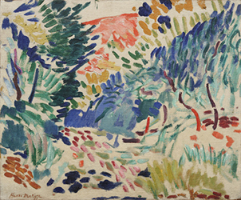
Fig.34 Landscape at Collioure(1905) Henri Matisse
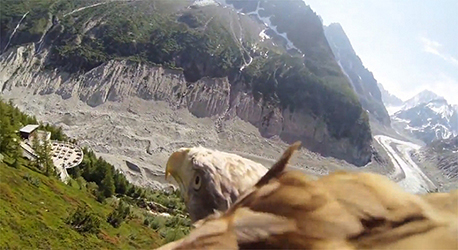
Fig.33 Vogelperspectief
Deze hellingen keren bijvoorbeeld ook terug in het schilderij Landscape at Collioure, 1905 van Henri Matisse. Je kunt hier mooi zien hoe vogels de wereld ook bekijken. De boom in het midden kromt naar rechts, evenals de omgeving. Als je de stroken vergelijkt zou je kunnen zeggen dat het ook zou kunnen worden ingezet bij het schilderen van bijvoorbeeld een rivier. Het is heel levendig. Het zijn bepaalde ‘swirls’ die de kromming realistisch maken. Het is niet enkel een boom 35º gedraaid schilderen, maar het moet nog steeds de suggestie geven dat deze op de vaste grond staat. Wanneer je enkel de boom kantelt lijkt deze te zweven, ook interessant, maar krijg je niet het vogelperspectief. Dit schilderij geeft mij het gevoel door een enorm landschap te vliegen.
04) Zweven
Het blijven zweven is iets wat terugkeert in verschillende vormen. Het is een moment waarop de pauze knop lijkt ingedrukt, hoe wordt dit in beeld gebracht?
4.1 De onzichtbare kracht
Een onzichtbare kracht wordt vaak ingezet om mensen of dingen te laten zweven. Denk hierbij aan het water, een gift van de natuur die ons kan dragen. Denk hierbij aan surfen over het water, maar ook aan jezelf laten drijven op het water. Hierbij kijk je in het luchtledige. Ikzelf kan deze onzichtbare lagen altijd haast aanraken en visualiseren in mijn gedachten, en ik denk dat iedereen dit onbewust doet. Wanneer je door het water zwemt vloei je als het ware mee met het water. Wanneer je er op drijft/zweeft lijkt dat water zich ineens aan te passen aan jou. De rollen worden hierin omgedraaid. Zweven is iets wat iedereen zou kunnen vastleggen, je zou een foto kunnen maken van een persoon die springt of de hele situatie kunnen photoshoppen. In bijna geen van deze gevallen ervaar ik wat ik wel ervaar als ik dobber in het water. Bij foto’s van springende mensen komt dat hoogstwaarschijnlijk doordat hun armen meespringen, wat verraadt dat de persoon snel zal landen. Ik mis hierin ook de twee onzichtbare lagen die de kracht zetten om diegene te dragen. Deze lagen zijn niet tastbaar, maar toch mis je deze wel als deze er niet zijn. Met gephotoshopt beelden geldt precies hetzelfde. Om dit te onderzoeken heb ik video’s bekeken films, maar ook van indoor skydiven. Ik denk dat dit zweven namelijk een erg belangrijk onderdeel kan zijn binnen het beantwoorden van mijn vraag.
Wij hebben allemaal het idee dat wanneer wij zouden kunnen zweven ook tegelijkertijd de tijd kunnen verslaan. Ik denk dat dat te maken heeft met een simpel principe. Het zweven staat hierin gelijk als het niets, niets doen. In dit soort momenten worden wij ons altijd meer bewust van de tijd, wanneer wij druk bezig zijn vliegt de tijd zo voorbij. Ruimte is altijd een bepalend onderdeel van het zweven zelf. Er is altijd een tendens aanwezig wanneer iets in de ruimte zweeft. Wanneer jij een bal aan een draad ophangt aan een draad aan het plafond, zal dit onmiddellijk het centrale punt van de ruimte worden. Ons oog wordt aangetrokken door iets wat afwijkt van de normale gang van zaken, wij komen zelf in het dagelijkse leven niet vaak elementen tegen die de zwaartekracht lijken te verslaan.
4.2 De ruimte
De letterlijke ruimte, ver van de aarde, wordt vaak gevisualiseerd in films. Ik heb een aantal scenes geanalyseerd van verschillende films.
De eerste scene die ik wil analyseren komt uit de film Gravity, een zeer geprezen science fiction film. In Gravity 20zweven twee astronauten in de ruimte om hun weg terug te vinden naar de aarde. In deze scene wordt het schip vernietigd en zie je hoe de astronauten losraken van hun houvast. Het eerste wat opvalt in deze scene is dat alles continue lijkt te draaien. Elk zwevend object/mens roteert continue om zijn as. De vallende objecten vallen enorm snel, de astronauten die blijven veel langzamer in het rond zweven. Net als in mijn beschrijving over de vrije val, kun je jezelf ook in deze scene niet meer oriënteren. Deze scene is voor de kijker en voor de personages niet een voorbeeld van het vrije gevoel van zweven, maar hoe dit wordt overgedragen is erg krachtig. Doordat je niet meer weet wat boven en onder is, zie je objecten vallen van rechts naar links in plaats van van onder naar boven. Wanneer de aarde reusachtig in beeld komt, lijkt deze het ene moment boven je te verschijnen (wat theoretisch gezien niet kan) en het andere moment weer onder je. Doordat zij zo erg spelen met het gevoel van desoriëntatie creëren zij een realistisch plaatje van een vrije val. Wanneer je naar de lichamen van de astronauten kijkt zie je dat deze worden opgetild door de zwaartekracht. Zo worden beide benen vaak even in de lucht getrokken. De astronauten zweven tussen het niets en de aarde in, het zwart is hierin het niets. Schaal speelt hierin naarmate de scene voortgaat een erg bepalende rol. In het begin zie je veel vaker de aarde, en maar kleine hoeveelheden niets. Op het einde wordt er abrupt een einde gemaakt aan het spinnen doordat de astronaute zichzelf losmaakt van haar houvast. Hiermee ontstaat er gelijk een terugslag, die zij ervaart, maar ook de kijker. Wanneer zij zichzelf losmaakt, klapt zij naar achteren en maakt ze als het ware continue een flikflak. Ze gaat op in het niets en is op het eind nog maar een klein stipje in de ruimte. Hiermee wordt gevisualiseerd hoe groot het niets is en hoe klein wij daarin ten opzichte zijn.
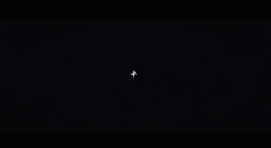
Wolkenstudies uit het boek The Movement of Clouds around Mount Fuji. Beeldmateriaal van de Japanse meteoroloog en fotograaf Masanao AbeVölter. Ge-edit door Helmut Völter en Marcel Beyer (2011). Gepubliceerd door Spector Books.
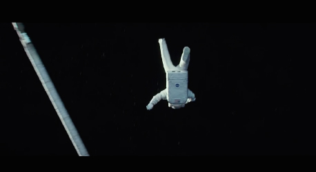
Wolkenstudies uit het boek The Movement of Clouds around Mount Fuji. Beeldmateriaal van de Japanse meteoroloog en fotograaf Masanao AbeVölter. Ge-edit door Helmut Völter en Marcel Beyer (2011). Gepubliceerd door Spector Books.
Scene uit Gravity (2013), geregisseerd door Alfonso Cuarón, Warner Bros. Pictures.
Een andere scene uit Gravity lijkt minder spectaculair, maar deze scene is juist prachtig als het gaat om gewichtloosheid. In deze scene zweven beide overgebleven astronauten achter elkaar aan. Hierin wordt weer duidelijk dat gewichtloosheid nooit iets kan zijn wat stilstaat. Opnieuw zijn beide lichamen overgelaten aan de kracht van het luchtledige en hebben zij hier geen controle over. De vorige scene zat vol los vliegende elementen, maar deze scene bestaat enkel uit de twee astronauten. In het begin van deze scene zie je ze, met op de achtergrond de zon en in de diepte de aarde, vrij gestaag vooruit/ naar beneden zweven. Wanneer de camera inzoomt op de twee astronauten lijkt hun tempo ineens veel lager. Dit komt door twee dingen. Ten eerste verandert de afstand tussen de astronauten enorm. Op afstand kun je veel beter zien welke afstand zij afleggen. Zij zijn hier in eerste instantie ook gecentreerd afgebeeld, gefilmd vanaf de zijkant. Het tweede is dat de camera zich verplaatst van de zijkant naar de voorkant. Hierdoor zie je het vooraanzicht van de astronauten. Wanneer je iets van voor bekijkt, is beweging soms moeilijk in te schatten. Dit is niet het geval bij films waarbij mensen in de auto worden gefilmd, hierbij versnelt de omgeving mee met de auto. Wanneer je jezelf voortbeweegt in het niets, zoals de astronauten doen, kun je geen vergelijkingen maken. De astronauten leggen klaarblijkelijk een grote afstand kunnen af terwijl zij langzaam bewegen, dit werkt in ons brein averechts.
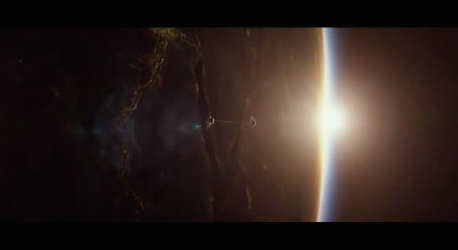
Wolkenstudies uit het boek The Movement of Clouds around Mount Fuji. Beeldmateriaal van de Japanse meteoroloog en fotograaf Masanao AbeVölter. Ge-edit door Helmut Völter en Marcel Beyer (2011). Gepubliceerd door Spector Books.
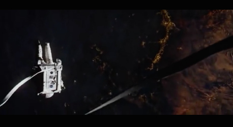
Wolkenstudies uit het boek The Movement of Clouds around Mount Fuji. Beeldmateriaal van de Japanse meteoroloog en fotograaf Masanao AbeVölter. Ge-edit door Helmut Völter en Marcel Beyer (2011). Gepubliceerd door Spector Books.
Muziek is ook een belangrijk onderdeel in films. In de film Interstellar 21 wordt geëxperimenteerd met de afwezigheid van geluid. “Geluid kan niet reizen in de ruimte, dus het gebruik van eventuele geluidseffecten om die omgeving portretteren zou de realiteit ervan verraden," aldus de regisseur Christopher Nolan. Dit heeft enorme indruk op mij gemaakt toen ik de film in de bioscoop zag. Tijdens het proces van het produceren van de soundscapes voor deze film werkte Nolan samen met sound-designer Richard King. Nolan was van mening dat wanneer ze gebruik zouden maken van enorme stiltes, de menselijke ervaring van deze reis versterkt werd. De claustrofobische momenten worden visueel in beeld gebracht door de cabine waarin zij zitten in combinatie met het niets wat je ziet wanneer je door de ramen kijkt. Opnieuw zijn zij heel klein ten opzichte van de ruimte in beeld gebracht, op een andere manier dan in Gravity. In Interstellar wordt er meer nadruk gelegd op het oneindige niets die zij vanuit een cabine ervaren, in plaats van dat zij zelf door deze ruimte zweven zonder omhulsel. Elke keer wanneer elk geluid wordt weggesneden uit de scene lijkt het alsof alle lucht uit de ruimte wordt weggezogen. Het is een voortdurende herinnering aan het feit dat buiten deze metalen wanden het luchtledige is waar wij als mens niet zouden kunnen overleven. Dit werkt enorm goed in de film en zeker wanneer je deze in de bioscoop bekijkt. De film speelt constant met contrasten. Wanneer je bombastische muziek verwacht, compenseren zij juist iets heel kleins of laten zij de muziek in zijn geheel weg. Hiermee laten zij de schaalverschillen tussen de mens en het niets spreken voor wat zij zijn. Het gebruik van stiltes in films heb ik nog niet eerder zo goed gezien als in Interstellar. Naast dat de stiltes het niets weerspiegelen, weerspiegelt het ook de emoties van de personages. Er wordt op hoog niveau geëxperimenteerd met contradicties en dat maakt deze reis van de film zo geloofwaardig. Hans Zimmer heeft veel soundtracks van de film op zijn naam staan.
4.2 Lichtheid
Filosofie komt ook om de hoek kijken, wanneer je over gewichtloosheid spreekt. Er zijn hier vooral twee kanten. Gewicht en lichtheid. Wat houdt dit precies in, en wat zijn de relaties met gewichtloosheid?
Mijn eigen perceptie over zweven is dat je wordt gedragen door een kracht groter dan jezelf. Jij hoeft zelf geen kracht meer te zetten om deze situatie in stand te houden. Je lichaam wordt haast gescheiden van je geest, waardoor je tot je innerlijke zelf komt. Dit klinkt super spiritueel, maar dit is wel hoe de meeste mensen het ervaren. Avicenna 22 heeft eens een gedachte-experiment gehouden met als titels: the floating man, flying man en man suspended in the air. The floating man staat gelijk aan iemand die vrij in de lucht valt. Deze persoon kent zichzelf, maar niet door hetgeen wat zijn zintuigen waarnemen. Floating verwijst hierin naar een toestand waarin de persoon enkel denkt vanuit zijn eigen spiegelbeeld, zonder hulp te krijgen van zijn zintuigen of fysieke lichaam. De geest zweeft als het ware boven de afgrond van de oneindigheid. Iedereen kan dit experiment zelf proberen. Het enigste wat je hoeft te doen is jezelf met je ogen dicht inbeelden dat je daadwerkelijk zweeft. Iedereen kan zich dit inbeelden, omdat wij gevoed zijn met verschillende vormen hiervan in verschillende media. Als je hiertoe in staat bent kom je er achter dat ons bestaan niet afhangt van ons lichaam, maar van onze geest.
Het kwijtraken van gewicht keert ook terug in het boek De Ondraaglijke Lichtheid van het Bestaan geschreven door Milan Kundera. Hierin krijgt lichtheid een metaforische lading, doordat het hierin gaat over de ziel en de filosofie. Dit boek begint met de eeuwige wederkeer, wat als alles wat eens is gepasseerd opnieuw zal plaatsvinden? Hoe geeft dit vorm aan de betekenis van ons leven?
‘In de wereld van de eeuwige wederkeer rust op elke handeling het gewicht van ondraaglijke verantwoordelijkheid. Daarom noemde Nietzsche het idee van eeuwige wederkeer de zwaarste last (das schwerste Gewicht).
Als de eeuwige wederkeer de zwaarste last is, dan steken onze levens daartegen af in al hun schitterende lichtheid. Maar is zwaarte werkelijk verschrikkelijk en lichtheid schitterend?’ 23
Het bevrijden van alle lasten hoeft voor hoofdpersonage Thomas geen positief gegeven te zijn. Wat heeft het leven voor zin als wij ons enkel bevinden in het licht van het bestaan?
‘De mythe van de eeuwige wederkeer, stelt dat een leven dat voor eens en altijd verdwijnt, dat niet terugkomt, op een schaduw lijkt, gewichtloos, bij voorbaat dood, en of het huiveringwekkend was, prachtig of verheven, die huiver, pracht en verhevenheid zijn van geen betekenis. ‘
- Milan Kundera
Wanneer ik de term gewichtloosheid benader op een andere manier kun je eigenlijk stellen dat hij die geen gewicht ervaart in zekere zin neutraal is. Om dit letterlijk terug te koppelen naar het zweven zou je kunnen zeggen dat deze persoon tussen die twee lagen in zweeft. Deze lagen kunnen worden gezien als twee partijen. Degene die gewichtloos is kiest hierin geen partij. Het is haast een toestand waarbij alle emoties van buiten af worden uitgeschakeld, maar het gevoel van vrijheid komt sterk naar boven. Hierdoor voelt iedereen zich aangetrokken tot gewichtloosheid, omdat de zwaarte in het leven hier wordt afgenomen. Het lijkt haast een kleurloos bestaan.
4.3 Choreografie
Naast de schilderkunst vond ik het heel belangrijk om ook onderzoek te doen naar ballet en beweging. In de negentiende eeuw werd de Romantiek een belangrijke stroming in alle kunsten. Dans bleek erg geschikt om de idealen van de romantiek uit te beelden. Hierin nam de dans het karakter aan van de romantiek. Om de indruk van zwevende danseressen te wekken, werd de spitzen techniek ontwikkeld. Spitzen zijn balletschoenen die er voor zorgen dat de danseressen op de puntjes van hun tenen staan. Hierdoor lijken de danseressen te zweven. De witte, halflange tutu suggereert ook dat de danseres een licht, bovennatuurlijk wezen is. Aan de rug zijn vleugeltjes bevestigd. Om deze rede zijn hun kostuums ook vaak doorschijnend, en zo dus minder zwaar. De rol van de mannelijke dansers is dan ook het ondersteunen van deze schijnbaar gewichtloze danseressen.
La Sylphide24 heeft een belangrijke rol gespeeld in deze ontwikkeling. Met de komst van La Sylphide startte ook het romantisch ballet. Een Sylfide is als het ware een gewichtloze sprookjesfiguur, een luchtgeest. Met haar spitzen en gracieuze bewegingen tart zij voortdurend de zwaartekracht. Deze gewichtloosheid weerspiegelt de hoge idealen, en onbereikbare liefdes. De danseressen wilden zowel geestelijk als lichamelijk loskomen van de aarde. Hiermee benadrukken ze tegelijkertijd de reële en metaforische kant van gewichtloosheid. Danseressen gingen steeds hoger op de tenen dansen, totdat ze op de punten van hun tenen stonden. Op dat moment ontstonden de welbekende spitzen. In La Sylphide wordt het verhaal van James vertelt die op het punt staat een boerenmeisje te huwen. Hij wordt verscheurd tussen de realiteit en de ideale droomwereld. Hiermee is La Sylphide de verpersoonlijking van onze droomwereld. Hiermee was La Sylphide het eerste ballet die de sfeer 'le mal du siècle’ oproept. Het benadrukt het verlangen naar een andere wereld, zuiverder en volmaakter, het sublieme. Ook vertelt het ballet het verhaal de angst om gevangen te zijn. Het vertelt ons ook dat het gevaarlijk kan zijn om ons in het onbekende te storten, dit reflecteert voor mij weer het gevoel van een vrije val. Het is dus zeker een voorstelling die ons laat nadenken.
Een ballerina die zweeft op haar spitzen staat voor geestelijke onbereikbaarheid. ‘The sky is the limit.’ Eerder heb ik het verticaal perspectief besproken, en in ballet is dit niet anders. De verticaal uitgebeelde bewegingen zijn zeer licht en dienen het verhaal. Verticale posities zijn dus uiterst belangrijk in het verbeelden van gewichtloosheid. Het ideaal wordt nagestreefd en krijgt ook een helpende hand van de mannelijke balletdanser. Zo brent de balletdanser de ballerina letterlijk hogerop, door het liften, of haar laten leunen op het zogeheten derde been. Dat derde been van de ballerina is dan de mannelijke knie. Verticale lijnen in ballet
Naast de theoretische kant van ballet, heb ik ook naar stukken gekeken. Ik heb deze met mijn toch wel gebrek aan danskennis geanalyseerd, meer met het oog van een ontwerper/kunstliefhebber.
Als eerst heb ik een stuk van La Sylphide geanalyseerd, Dit stuk wordt gedanst door Tamara Rojo en Steven McRae. Het eerste wat opvalt is de muziek, waarin korte aanloopjes worden genomen om na het hoogtepunt snel terug te keren. Dit wordt in een ritme herhaalt, terwijl de voeten passen in dezelfde richting zetten. Ik vind dit erg lijken op een parabool, maar dan in de muziek. Tijdens deze stappen houdt de ballerina haar armen in een gesloten houding, om deze vervolgens helemaal uit te spreiden. In de muziek lijkt een opening te klinken, die zij herhaaldelijk in verschillende richtingen uitbeeldt door haar armen open te spreiden. De danser maakt verschillende bewegingen met zijn armen door de lucht, als zijnde vreugde. Zodra de muziek versnelt, versnelt ook de ballerina haar pas en tippelt ze over de aarde. Hierbij ontstaat het eerste gevoel van zweven, doordat ze snel, zonder kracht te zetten zich voortbeweegt op de punten van haar tenen. Het verlangen van de man wordt bespeelt door een ballerina die steeds wegspringt/vliegt van hem. Er zijn mooie stukken waar dat tippelen op haar tenen haast verstoort lijkt te worden door een denkbeeldige weerstand. Haar sprongen zijn elegant, en te vergelijken met een trampoline sprong. Door haar houding blijft ze even in de lucht hangen. Haar houding verschilt wel met het trampoline springen, een been is al lager dan het ander waardoor het niet een sprong enkel omhoog lijkt, maar meer een sprong van controle die volkomen natuurlijk is. Het tempo van de dans wordt steeds hoger, gelijktijdig wordt de romantiek tussen de twee steeds groter. Zij lijken om elkaar heen te zweven. Wanneer de ballerina een herhaaldelijke pirouette maakt weerspiegelt dit geen duizeling, wat het op ‘aarde’ wel zou doen. Ik vind dit prachtig verbeeldt.
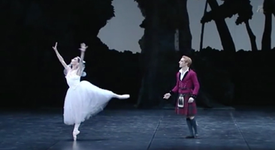
Fig.37 La Sylphide, Tamara Rojo, Steven McRae (2012)
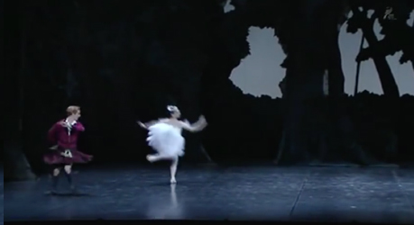
Fig.37 La Sylphide, Tamara Rojo, Steven McRae (2012)
Ik heb ook een ander stuk van La Sylphide geanalyseerd. Dit is een korter stuk, maar wel erg interessant met betrekking op mijn thema. In dit stuk wordt gespeeld met de bevriezing van de danseressen. De hoofdrolspeelster krijgt hier versterking van haar mede ballerina’s. Terwijl de hoofdrolspeelster keer op keer de zwaartekracht lijkt te bespelen, staan haar mede ballerina’s in pose. Zij vloeien heel langzaam over in een andere pose terwijl de ballerina verder gaat met haar eigen choreografie. Hierin wordt de tijd bespeelt. De vertraging op de achtergrond creëert zo haast het ideale droomplaatje. Verschillende danseressen staan met hun armen in de lucht, bevroren. Alsof zij toeschouwer zijn van de romantiek van de ander.
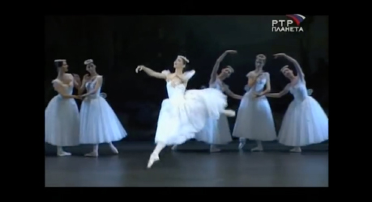
Fig.37 La Sylphide, Tamara Rojo, Steven McRae (2012)
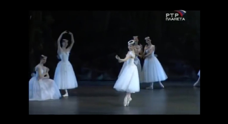
Fig.37 La Sylphide, Tamara Rojo, Steven McRae (2012)
Het laatste stuk wat ik heb geanalyseerd en relevant vind aan dit thema is uiteraard Swan Lake, van het Kirov Ballet. Er zit een prachtig stuk in waarbij een grote groep ballerina’s door de lucht lijken te zweven. Allemaal in dezelfde gestrekte houding. De groep komt op door herhaaldelijk een zwevende beweging te maken in de lucht. Dit doen zij door een been in de lucht te strekken.Dit stuk doet mij heel erg denken aan hoe vogels in een grote groep zich gedragen. Iedereen heeft weleens gezien hoe zo’n enorme groep vogels nieuwe vormen lijkt te maken in de lucht door korte vrije vallen te maken. Dit herken ik heel erg in de ballerina’s. Ondanks dat ze letterlijk niet van hoogteverschillen, lijken ze deze vrije vallen steeds te maken. Dit komt mede doordat zij zich ineens gaan voortbewegen in tegengestelde richting.
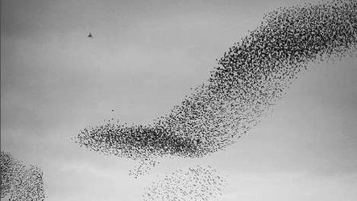
Fig.39 een zwerm vogels
Hoe wordt een choreografie vertaalt naar schrift?
Evenals muziek komt ballet nooit over als een ingestudeerd plan, terwijl de choreografie natuurlijk ver van te voren al vast staat. Bewegingen lijken onbedacht over te vloeien in andere bewegingen. Er bestaat ook een notatiesysteem voor een choreografie. De Benesjh-Notatie wordt gebruikt om een choreografie vast te leggen op papier. Dit wordt genoteerd door een choreologiste25, nadat de choreograaf de choreografie heeft bedacht. Een Benesh lijkt heel erg op een notenbalk van muziek. Het zijn pagina’s vol vijfzijdige balken, die elk staan voor een lichaamsdeel. Hoofd, schouders, bekken, knieën en voeten keren hierin dus terug als een enkele lijn. De rotatiesystemen zijn dermate moeilijk dat deze niet veel gebruikt worden. Voor mijn onderzoek zijn deze rotatiesystemen heel erg belangrijk, omdat hierin composities worden vastgelegd die gelijk staan aan de gewichtloze choreografie.
De boekhouder en beeldend kunstenaar Rudolf Benesh is de bedenker van dit notatiesysteem. Judy Maelor-Thomas is een van de twee choreologisten van Het Nationale Ballet, het enigste gezelschap in Nederland dat zijn choreografie vastlegt in schrift. In andere gezelschappen wordt de dans enkel vastgelegd doormiddel van video. Zo kan een dans nooit verloren gaan bij een nieuwe generatie. Het Benesh systeem is een soort stenoschrift, bestaande uit rare boogjes, kringetjes en allerlei andere open en dichte rondjes en vormen. Rudolf Benesh was boekhouder en beeldend kunstenaar en die vreemde combinatie keert hierdoor ook terug op het papier.
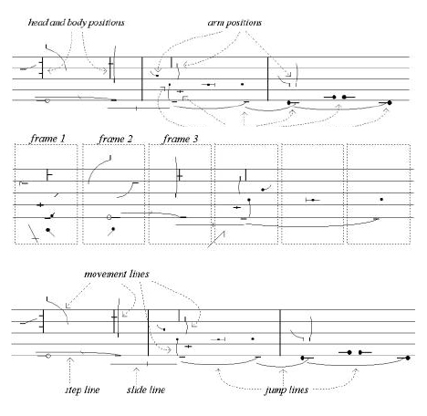
Fig.40 Benesh notatie systeem
De posities worden afgebeeld in verschillende frames, net zoals in een storyboard of stripboek. De bewegingslijnen beschrijven het pad wat de ledematen bewandelen. De voortbewegingslijnen verbinden de posities van de voeten, wanneer deze stappen, springen, of over het toneel glijden. De pijlen staan voor de verschillende richtingen die de dans opgaat. Het tempo wordt vastgelegd op beats, welke de snelheid van de beweging uitbeelden. Het tempo wordt eigenlijk hetzelfde uitgebeeld als een muziek notatie. Een streepje onder de onderste lijn staat gelijk aan het staan op een hele voet. Een streepje op deze onderste lijn staat weer voor een halve voet. Eronder staat de danseres weer op de spitz. De notatie wordt geschreven wanneer de choreologist de choreografie bekijkt van de achterzijde. Zelfs onbekende bewegingen is na wat gepuzzel weer te noteren met het systeem van Benesh. Het systeem van Benesh is een relatief jong systeem, 1956, in vergelijking met meer dan honderd andere dansschriften vanaf de vijftiende eeuw.
Samen met Benesh wordt ook het Labanotation systeem nog gebruikt. Dit systeem wordt beschreven door Rudolf Laban in Schrifttanz (“Written Dance”) in 1928. De vormen staan gelijk aan verschillende richtingen van de houdingen. Je leest dit schrift van onder naar boven. Afstand in de ruimte, gewicht en het lichaam etc. worden geschreven in verschillende symbolen. In dit schrift zijn ruimte, gewicht, tijd en stroming de belangrijkste onderdelen. Deze onderdelen zijn ook de leidraad voor mijn scriptie.
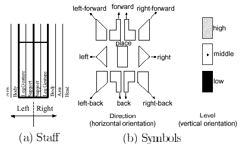
Fig.40 Benesh notatie systeem
De posities worden afgebeeld in verschillende frames, net zoals in een storyboard of stripboek. De bewegingslijnen beschrijven het pad wat de ledematen bewandelen. De voortbewegingslijnen verbinden de posities van de voeten, wanneer deze stappen, springen, of over het toneel glijden. De pijlen staan voor de verschillende richtingen die de dans opgaat. Het tempo wordt vastgelegd op beats, welke de snelheid van de beweging uitbeelden. Het tempo wordt eigenlijk hetzelfde uitgebeeld als een muziek notatie. Een streepje onder de onderste lijn staat gelijk aan het staan op een hele voet. Een streepje op deze onderste lijn staat weer voor een halve voet. Eronder staat de danseres weer op de spitz. De notatie wordt geschreven wanneer de choreologist de choreografie bekijkt van de achterzijde. Zelfs onbekende bewegingen is na wat gepuzzel weer te noteren met het systeem van Benesh. Het systeem van Benesh is een relatief jong systeem, 1956, in vergelijking met meer dan honderd andere dansschriften vanaf de vijftiende eeuw.
Samen met Benesh wordt ook het Labanotation systeem nog gebruikt. Dit systeem wordt beschreven door Rudolf Laban in Schrifttanz (“Written Dance”) in 1928. De vormen staan gelijk aan verschillende richtingen van de houdingen. Je leest dit schrift van onder naar boven. Afstand in de ruimte, gewicht en het lichaam etc. worden geschreven in verschillende symbolen. In dit schrift zijn ruimte, gewicht, tijd en stroming de belangrijkste onderdelen. Deze onderdelen zijn ook de leidraad voor mijn scriptie.
Choreografie binnen de kunst
Bruce Nauman zijn werk Revolving Upside Down (1963) is een videotape van een uur, de maximale lengte, is een mooi voorbeeld hoe performance en misleiding samen kunnen gaan. De opnames zijn gemaakt, terwijl zijn camera ondersteboven hing. Hierdoor lijkt Nauman over het plafond te lopen en zich te hebben ontdaan van de zwaartekracht. Dit beeld wordt versterkt doordat hij zijn armen hoog in de lucht houdt, waardoor het lijkt alsof deze naar beneden bungelen. Nauman voert hier een choreografie op, zonder enige muziek.
05) De landing
Wanneer je uit een vliegtuig springt, ik heb het nog nooit gedaan maar dit is mijn perceptie, passeer je al deze onzichtbare locaties in de lucht. De lucht biedt ons alle vrijheid, maar waarom willen wij dan toch zo graag weer landen op de vaste grond? Deze vrije val wordt gezien als een ontsnapping aan de realiteit, een kick, om vervolgens weer veilig met beide voeten op de grond te landen. Het benadert de droom waar wij al jaren naar streven, maar wij kunnen dit moment niet vasthouden. Is dat niet ironisch?
Gewichtloosheid kan worden bereikt door dit conceptueel en tegelijkertijd in vorm te benaderen. De conceptuele lading is belangrijk, omdat niet elk onderwerp zich hiervoor leent. Een te zwaar beladen ontwerp, het woord zegt het al, zou niet goed uit de verf komen wanneer je deze met vorm elementen gewichtloos probeert te maken. Het gaat dan zijn doel voorbij. Het bereiken van gewichtloosheid begint dus met een narratief. Wanneer dit narratief geschreven of bedacht is kun je bepalen welke vorm hierbij past.
In elk voorafgaand voorbeeld speelt de maker met een ingenomen perspectief. In de eerdere voorbeelden van Turner wordt hierin bijvoorbeeld de aarde niet zichtbaar weergegeven, zodat wij het gevoel hebben te zweven. In de schilderkunst is dit makkelijker in beeld te brengen dan bij ontwerp. Wij als mensen zijn altijd opzoek naar een vaste ondergrond, deze kan ook worden weggehaald tijdens ontwerp beslissingen. Wat kan er bijvoorbeeld ontstaan wanneer je ineens buiten je grid gaat werken? Wij als ontwerper hebben een enorme controle over hetgeen wat wij aan het doen zijn. Het zou zelfs een keer goed zijn als wij deze controle voor even kwijtraken. Het beste zou zijn wanneer wij bepaalde eigenschappen van de vogel kunnen combineren met de eigenschappen van een goed ontwerper.
De kracht van de kunst ligt in het vasthouden van gewichtloosheid. Iets wat in werkelijkheid niet kan, kunnen wij wel. Wij kunnen dat hele korte moment van gewichtloosheid voor eeuwig vastleggen, en zo dus oneindig rekken. Deze bevroren beelden zijn een referentie naar foto’s geschoten door vogelspotters. In deze foto’s keert de diagonale lijn ook steeds terug. Een diagonale lijn staat voor beweging, maar wat is het effect als deze gedrukt is? Denk aan de ballerina’s die telkens opnieuw naar boven reiken in een perfecte lijn. Ook het werk van Yves Klein is hier een mooi voorbeeld van. Hierin kweekt hij een illusie door twee foto’s te combineren. Dit keert in het ontwerpen ook terug in de typografie, denk hier aan de italics. Als ontwerper begeleidt je de lezer als het ware door een tekst/verhaal heen. Wij nemen dus haast een rol van een regisseur aan. Achter haast elke beslissing schuilt een idee. Taal kan hierin ook een belangrijke rol spelen, kijk maar naar Kaayk, zijn overtuigingskracht kwam mede door de verhalen die hij liet zien aan de wereld.
Beweging is iets wat uiteraard in een bepaalde vorm moet terugkeren. Turner creëert de beweging met losse toetsen van zijn kwast, terwijl Bas Jan Ader deze beweging weer op tape vast heeft gelegd. Tegenwoordig hoeven wij ons als ontwerper niet meer vast te houden aan een enkel medium. Wij hebben de mogelijkheid en de vaardigheden om ontwerpen voort te zetten in media die bijvoorbeeld wel bewegen. Tegenwoordig maakt de virtual reality al grote sprongen hand in hand met ontwerpers.
Ik ben zelf van mening dat beweging ook terug kan keren in het proces, hoe komt iets tot stand? Wat zou er bijvoorbeeld gebeuren als je een lijn trekt wanneer je een vrije val maakt? Zal deze lijn dan ineens korter of juist langer worden? Een dynamisch proces kan worden stil gelegd om gewichtloosheid te bereiken, of juist worden overdreven om te vliegen.
Als ontwerper heb je een goed ontwikkeld ritme. Een ontwerper hoeft bijvoorbeeld niet muzikaal te zijn om te kunnen bepalen op welk punt gewichtloosheid het sterkst zal uitvallen. Een ontwerper maakt namelijk beslissingen met een gevoel voor ritme. Met de jaren ontwikkel je dat gevoel als ontwerper en kan je dit ook toepassen in andere media. Dit ritme is essentieel om gewichtloosheid te bereiken, omdat gewichtloosheid kan worden gezien als een punt tussen het begin en het einde. Wat daar voor en na staat te gebeuren is net zo belangrijk als het punt zelf. In het begin kan er sprake zijn van spanning, terwijl op het eind de focus ligt op de ontlading. Elk medium wat wij gebruiken vereist een ritme. Gewichtloosheid kan dus ook in elk medium worden toegepast.
Alles wat streeft naar gewichtloosheid moet de vogel als uitgangspunt nemen. Dit zien wij terug in de representatie van goden, de opper machtigste, maar ook in de fotografie van Katrin Korfmann. Er zit hierin een verschil tussen de vogel bestuderen en je verplaatsen in een vogel. Wanneer je een vogel bestudeert zul je zien dat deze rare duiken maakt. Probeer je in te beelden dat elke locatie die hij passeert een nieuwe positie is voor je typografie. Door deze duiken ontstaan er rare leegtes. Daarom is leegte zo ontzettend belangrijk. Het is hetgeen wat zich tussen twee belangrijke elementen bevindt. Wanneer je deze leegtes kort op elkaar toepast stuur je de lezer om het volgende snel te lezen. Wanneer je meer ruimte openlaat, ontstaat er een lichtheid, doordat de lezer niet extreem geforceerd wordt. Dit keert niet enkel terug in de choreografie van de vogel, maar ook wanneer je je verplaatst in een vogel. De enorme witruimtes op aarde zijn in een slag te vertalen naar print. Dit kan zelfs enkel typografisch worden opgelost. Een vogel bevindt zich ook altijd in een ruimte, ik denk dat het heel spannend kan zijn om grafisch werk op een andere manier te positioneren in de ruimte. Wanneer je grafisch werk laag op de muur hangt, kijken wij daarnaar vanuit het vogelperspectief. Wanneer je de vogel als uitgangspunt neemt, moet je ook je eigen vleugels spreiden en opzoek gaan naar nieuwe uitdagingen.
Als ik terugblik op de afgelopen vier jaar op de academie, heeft dit overeenkomsten met het verhaal wat ik wil vertellen. Ik heb ervaren hoe het is om vanuit een hoogtepunt naar beneden te vallen en weer op te stijgen, ik heb ontdekt dat vormgeving mij verlichting biedt. Zelfs ik heb soms weleens last gehad van hoogmoed, dit komt mede doordat mijn passie voor het vak zo groot is en de rem dan daadwerkelijk verdwenen is. Vormgeving geeft mij de kans om voor even boven mijzelf uit te stijgen.
Bronnenlijst
Books
Raaijmakers, Dick (1985), De Methode . Eindhoven: Onomatopee(herdruk)
De Nooy, Arjan en Geene, Anne(2016), Ornithologie. Rotterdam: Uitgeverij de Hef Publishers
Egan, Jennifer (2010), A Visit from the Goon Squad. Engeland: Knopf
Cage, John (1961), Silence: Lectures and Writings, Middletown Wesleyan: Wesleyan University Press
Edwards, Mary D (2012), Gravity in Art: Essays on Weight and Weightlessness in Painting, Sculpture and Photography. Jefferson: McFarland
Völter, Helmut en Beyer, Marcel (2011), Wolkenstudien. Leipzig: Spector Books
Bakke, Monika (2007), Going Aerial - Air, Art, Architecture, Maastricht: Jan Van Eyck Academie
Van den Bergh, Wim (1993), Berlin Night. Rotterdam: NAI Publishers
Bachelard, Gaston (1988). Air and Dreams: An Essay on the Imagination of Movement. Dallas: Dallas Institute of Humanities and Culture.
Dolar, Mladen (2006). A Voice and Nothing More. Cambridge, Mass. and London: MIT Press.
Lynn, Michael R(2010), The Sublime Invention: Ballooning in Europe, 1783–1820. New York: Routledge
Bookman, Scott (2003), Matters of Gravity: Special Effects and Supermen in the 20th Century. Duke: Duke University Press
Parr, Adrian (2008), Deleuze and Memorial Culture: Desire, Singular Memory and the Politics of Trauma Edinburgh. Edinburgh University Press Ltd
Fruh, Roland en Paradis, Louise(2013). 30 Years of Swiss Typographic Discourse in the Typografische Monatsblatter. Zurich: Lars Muller Publishers
Deleuze, Gilles(1968), Difference and Repetition, Reille: Presse Universitaires de France
Documentaires/films Taai en fel gestreden, Wiebe Klijnstra, RTV Noord(2008) Here is Always Somewhere Else: The disappearance of Bas Jan Ader, Rene Daalder, Aaron Ohlmann (2007) Interstellar (2014), Cristopher Nolan, Paramount Pictures Gravity (2013), Alfonso Cuarón, Warner Bros. Pictures Powers of Ten, Charles Eames (1977) 4'33”, John Cage (1952) La Sylphide, Tamara Rojo, Steven McRae (2012) Natalia Osipova - La Sylphide, Osipova and Lopatin (2008) Tchaikovsky: Swan Lake - The Kirov Ballet, The Kirov Ballet (2011)
Websites
Blankesteijn, Herbert,”Weg met de zwaartekracht!”, http://hblankes.home.xs4all.nl/Oud/Parabool/hfst1/txt/parabol1.htm 🔗
Geen auteur, “Natuurkunde.nl: Zwaartekracht”, http://www.natuurkunde.nl/artikelen/684/zwaartekracht
Geen auteur,”The Benesh Movement Notation Score”, http://www.ok-edesign.com/Benesh/GiselleAct1.htm
Connor, Steven (2007) “Sound and the pathos of the air”. http://www.stevenconnor.com/pathos/
Carvalho, Denise, “Dream of Flying” http://www.denisecarvalho.com/files/7713/2503/5241/Dream_of_Flying.pdf
Kraal, Brandon (2014), “The Sublime Through the Eyes of Steven DaLuz”. http://www.huffingtonpost.com/brandon-kralik/the-sublime-through-the-e_b_5691624.html
Steered, Hito (2011), “In Free Fall: A Thought Experiment on Vertical Perspective”, http://www.e-flux.com/journal/24/67860/in-free-fall-a-thought-experiment-on-vertical-perspective/
Eamesoffice, “Powers of ten and the relative size of things in the universe”, http://www.eamesoffice.com/the-work/powers-of-ten/
De Pont, “Richard Serra”, http://www.depont.nl/collectie/kunstenaars/kunstenaar/werk_id/346/kunstenaar/serra/
Yves Klein Archive, http://www.yveskleinarchives.org
Simpson, Jane (2012), “Royal Ballet – La Sylphide & Ballo della Regina – London”,http://dancetabs.com/2012/05/royal-ballet-la-sylphide-ballo-della-regina-london/
Katrin Korfmann, “Katrin Korfmann”, http://www.katrinkorfmann.com/-en
Geen auteur,“Leonardo da Vinci's Flying Machine Invention”, http://www.da-vinci-inventions.com/flying-machine.aspx
MARRIES, “The steam-powered pigeon of Archytas – the flying machine of antiquity” (2014), http://www.ancient-origins.net/ancient-technology/steam-powered-pigeon-archytas-flying-machine-antiquity-002179
Floris Kaayk, “Floris Kaayk - Overview of work and media”, https://www.floriskaayk.com
Historiek, Aphrodite, godin van de vrouwelijke schoonheid (2007), http://historiek.net/aphrodite/53/
Human Birdsongs, “Human Birdsongs: building a semi human powered flying device”, http://www.humanbirdwings.net